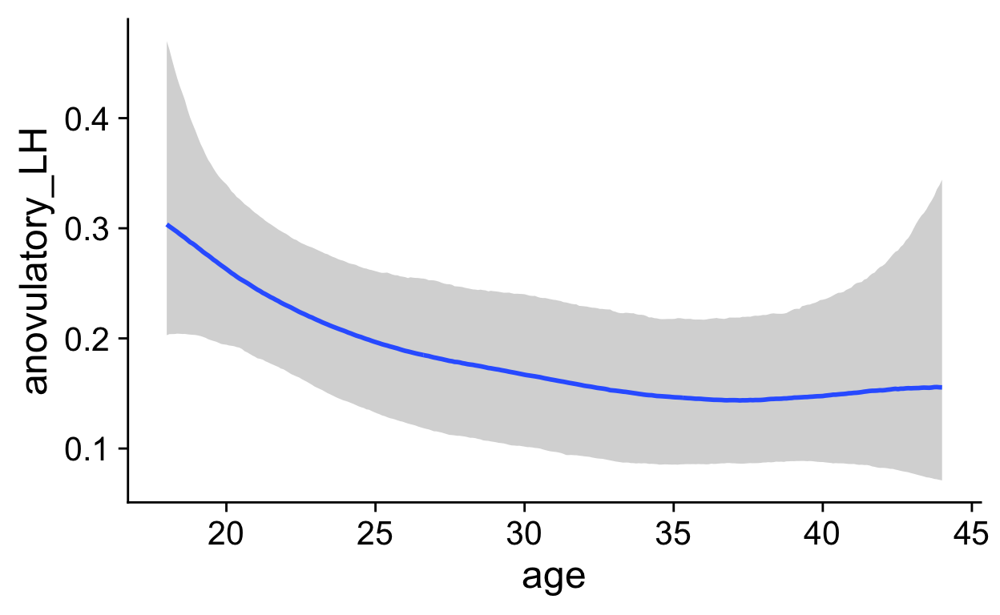
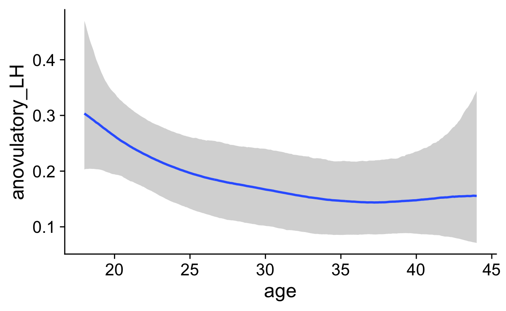

Attaching package: 'cowplot'The following object is masked from 'package:patchwork':
align_plotsLoading required package: ggplot2Linking to ImageMagick 6.9.12.3
Enabled features: cairo, fontconfig, freetype, heic, lcms, pango, raw, rsvg, webp
Disabled features: fftw, ghostscript, x11Show code
library(HH)
Loading required package: latticeLoading required package: latticeExtra
Attaching package: 'latticeExtra'The following object is masked from 'package:ggplot2':
layerLoading required package: multcompLoading required package: mvtnormLoading required package: survivalLoading required package: TH.dataLoading required package: MASS
Attaching package: 'MASS'The following object is masked from 'package:patchwork':
area
Attaching package: 'TH.data'The following object is masked from 'package:MASS':
geyserFound more than one class "atomicVector" in cache; using the first, from namespace 'Matrix'Also defined by 'Rmpfr'Found more than one class "atomicVector" in cache; using the first, from namespace 'Matrix'Also defined by 'Rmpfr'Found more than one class "atomicVector" in cache; using the first, from namespace 'Matrix'Also defined by 'Rmpfr'Found more than one class "atomicVector" in cache; using the first, from namespace 'Matrix'Also defined by 'Rmpfr'Found more than one class "atomicVector" in cache; using the first, from namespace 'Matrix'Also defined by 'Rmpfr'Found more than one class "atomicVector" in cache; using the first, from namespace 'Matrix'Also defined by 'Rmpfr'Found more than one class "atomicVector" in cache; using the first, from namespace 'Matrix'Also defined by 'Rmpfr'Found more than one class "atomicVector" in cache; using the first, from namespace 'Matrix'Also defined by 'Rmpfr'Found more than one class "atomicVector" in cache; using the first, from namespace 'Matrix'Also defined by 'Rmpfr'Found more than one class "atomicVector" in cache; using the first, from namespace 'Matrix'Also defined by 'Rmpfr'Found more than one class "atomicVector" in cache; using the first, from namespace 'Matrix'Also defined by 'Rmpfr'Found more than one class "atomicVector" in cache; using the first, from namespace 'Matrix'Also defined by 'Rmpfr'── Attaching packages ───────────────────────────── tidyverse 1.3.1 ──✓ tibble 3.1.4 ✓ dplyr 1.0.7
✓ tidyr 1.1.3 ✓ stringr 1.4.0
✓ readr 2.0.1 ✓ forcats 0.5.1
✓ purrr 0.3.4 ── Conflicts ──────────────────────────────── tidyverse_conflicts() ──
x dplyr::combine() masks gridExtra::combine()
x dplyr::filter() masks stats::filter()
x dplyr::lag() masks stats::lag()
x latticeExtra::layer() masks ggplot2::layer()
x dplyr::select() masks MASS::select()
x purrr::transpose() masks HH::transpose()
Attaching package: 'tidylog'The following objects are masked from 'package:dplyr':
add_count, add_tally, anti_join, count, distinct,
distinct_all, distinct_at, distinct_if, filter,
filter_all, filter_at, filter_if, full_join, group_by,
group_by_all, group_by_at, group_by_if, inner_join,
left_join, mutate, mutate_all, mutate_at, mutate_if,
relocate, rename, rename_all, rename_at, rename_if,
rename_with, right_join, sample_frac, sample_n, select,
select_all, select_at, select_if, semi_join, slice,
slice_head, slice_max, slice_min, slice_sample,
slice_tail, summarise, summarise_all, summarise_at,
summarise_if, summarize, summarize_all, summarize_at,
summarize_if, tally, top_frac, top_n, transmute,
transmute_all, transmute_at, transmute_if, ungroupThe following objects are masked from 'package:tidyr':
drop_na, fill, gather, pivot_longer, pivot_wider,
replace_na, spread, uncountThe following object is masked from 'package:MASS':
selectThe following object is masked from 'package:stats':
filterLoading required package: RcppLoading 'brms' package (version 2.16.2). Useful instructions
can be found by typing help('brms'). A more detailed introduction
to the package is available through vignette('brms_overview').
Attaching package: 'brms'The following object is masked from 'package:HH':
mmcThe following object is masked from 'package:survival':
kidneyThe following object is masked from 'package:stats':
arShow code
source("0_summary_functions.R")
Show code
summaries <- list.files("summaries", full.names = T)
summaries <- summaries[!str_detect(summaries, "(empty|Ovulatory|OCMATE HC|BioCycle_Estradiol|Estradiol LCMS|BioCycle_Progesterone\\.rds)")]
summary_names <- str_match(summaries, "table_(.+?)\\.rds")[,2]
e2_summaries <- summaries[str_detect(summaries, pattern = "Estradiol")]
e2_summaries <- e2_summaries[!str_detect(e2_summaries, "(Estradiol LCMS)")]
warning(paste(e2_summaries, collapse = " "))
Warning: summaries/table_BioCycle_Free Estradiol.rds summaries/
table_Blake 2017_Estradiol.rds summaries/table_GOCD2_Estradiol.rds
summaries/table_GOL2_Estradiol.rds summaries/table_Grebe et al.
2016_Estradiol.rds summaries/table_Marcinkowska 2020_Estradiol.rds
summaries/table_OCMATE Non-HC_Estradiol.rds summaries/table_Roney
2013_Estradiol.rdsShow code
Warning: summaries/table_BioCycle_Progesterone.02.rds
summaries/table_Blake 2017_Progesterone.rds summaries/
table_GOCD2_Progesterone.rds summaries/table_GOL2_Progesterone.rds
summaries/table_Grebe et al. 2016_Progesterone.rds summaries/
table_Marcinkowska 2020_Progesterone.rds summaries/table_OCMATE Non-
HC_Progesterone.rds summaries/table_Roney 2013_Progesterone.rdsTable 1
Tabular overview of studies (assay, available cycle phase measures, means, SDs, ranges, logmean/sd, missing/censored values.
Show code
summaries <- list.files("summaries", full.names = T)
summaries <- summaries[!str_detect(summaries, "(empty|Ovulatory|OCMATE HC|BioCycle_Estradiol|Estradiol LCMS|Progesterone.02)")]
summaries <- summaries[str_detect(summaries, pattern = "(Estradiol|Progesterone)")]
summary_names <- str_match(summaries, "table_(.+?)\\.rds")[,2]
message(paste(summary_names, "\n"))
BioCycle_Free Estradiol
BioCycle_Progesterone
Blake 2017_Estradiol
Blake 2017_Progesterone
GOCD2_Estradiol
GOCD2_Progesterone
GOL2_Estradiol
GOL2_Progesterone
Grebe et al. 2016_Estradiol
Grebe et al. 2016_Progesterone
Marcinkowska 2020_Estradiol
Marcinkowska 2020_Progesterone
OCMATE Non-HC_Estradiol
OCMATE Non-HC_Progesterone
Roney 2013_Estradiol
Roney 2013_Progesterone Show code
sus <- list()
su_dfs <- list()
for(s in seq_along(summaries)) {
su <- rio::import(summaries[s])
su_df <- su
su_df$Sample <- summary_names[s]
su_df$imputed_fc_vs_measured_graph <-
su_df$imputed_bc_vs_measured_graph <-
su_df$imputed_lh_vs_measured_graph <-
su_df$bc_day_model <-
su_df$fc_day_model <-
su_df$lh_day_model <-
su_df$distribution <- NULL
su_df$imputed_fc_vs_measured_graph <-
su_df$imputed_bc_vs_measured_graph <-
su_df$imputed_lh_vs_measured_graph <-
su_df$Distribution <-
su_df$plot_bc <-
su_df$plot_fc <-
su_df$plot_lh <- summary_names[s]
sus[[summary_names[s]]] <- su
su_dfs[[summary_names[s]]] <- su_df %>% as_tibble() %>% mutate_if(is.numeric, ~ sprintf("%.2f", .))
}
mutate_if: converted 'Limit of detection' from double to character (0 new NA) converted 'mean' from double to character (0 new NA) converted 'logmean' from double to character (0 new NA) converted 'logsd' from double to character (0 new NA) converted 'median' from double to character (0 new NA) converted 'sd' from double to character (0 new NA) converted 'mad' from double to character (0 new NA) converted 'missing' from integer to character (0 new NA) converted 'outliers' from integer to character (0 new NA) converted 'censored' from integer to character (0 new NA) converted 'n_women' from integer to character (0 new NA) converted 'n_cycles' from integer to character (0 new NA) converted 'n_days' from integer to character (0 new NA) converted 'usable_n' from integer to character (0 new NA) converted 'usable_n_women' from integer to character (0 new NA)mutate_if: converted 'Limit of detection' from double to character (0 new NA) converted 'mean' from double to character (0 new NA) converted 'logmean' from double to character (0 new NA) converted 'logsd' from double to character (0 new NA) converted 'median' from double to character (0 new NA) converted 'sd' from double to character (0 new NA) converted 'mad' from double to character (0 new NA) converted 'missing' from integer to character (0 new NA) converted 'outliers' from integer to character (0 new NA) converted 'censored' from integer to character (0 new NA) converted 'n_women' from integer to character (0 new NA) converted 'n_cycles' from integer to character (0 new NA) converted 'n_days' from integer to character (0 new NA) converted 'usable_n' from integer to character (0 new NA) converted 'usable_n_women' from integer to character (0 new NA)mutate_if: converted 'Limit of detection' from double to character (0 new NA) converted 'mean' from double to character (0 new NA) converted 'logmean' from double to character (0 new NA) converted 'logsd' from double to character (0 new NA) converted 'median' from double to character (0 new NA) converted 'sd' from double to character (0 new NA) converted 'mad' from double to character (0 new NA) converted 'missing' from integer to character (0 new NA) converted 'outliers' from integer to character (0 new NA) converted 'censored' from integer to character (0 new NA) converted 'n_women' from integer to character (0 new NA) converted 'n_cycles' from integer to character (0 new NA) converted 'n_days' from integer to character (0 new NA) converted 'usable_n' from integer to character (0 new NA) converted 'usable_n_women' from integer to character (0 new NA)mutate_if: converted 'Limit of detection' from double to character (0 new NA) converted 'mean' from double to character (0 new NA) converted 'logmean' from double to character (0 new NA) converted 'logsd' from double to character (0 new NA) converted 'median' from double to character (0 new NA) converted 'sd' from double to character (0 new NA) converted 'mad' from double to character (0 new NA) converted 'missing' from integer to character (0 new NA) converted 'outliers' from integer to character (0 new NA) converted 'censored' from integer to character (0 new NA) converted 'n_women' from integer to character (0 new NA) converted 'n_cycles' from integer to character (0 new NA) converted 'n_days' from integer to character (0 new NA) converted 'usable_n' from integer to character (0 new NA) converted 'usable_n_women' from integer to character (0 new NA)mutate_if: converted 'Limit of detection' from double to character (0 new NA) converted 'LOQ' from double to character (0 new NA) converted 'Intraassay CV' from double to character (0 new NA) converted 'Interassay CV' from double to character (0 new NA) converted 'mean' from double to character (0 new NA) converted 'logmean' from double to character (0 new NA) converted 'logsd' from double to character (0 new NA) converted 'median' from double to character (0 new NA) converted 'sd' from double to character (0 new NA) converted 'mad' from double to character (0 new NA) converted 'missing' from integer to character (0 new NA) converted 'outliers' from integer to character (0 new NA) converted 'censored' from integer to character (0 new NA) converted 'n_women' from integer to character (0 new NA) converted 'n_cycles' from integer to character (0 new NA) converted 'n_days' from integer to character (0 new NA) converted 'usable_n' from integer to character (0 new NA) converted 'usable_n_women' from integer to character (0 new NA)mutate_if: converted 'LOQ' from double to character (0 new NA) converted 'Intraassay CV' from double to character (0 new NA) converted 'Interassay CV' from double to character (0 new NA) converted 'mean' from double to character (0 new NA) converted 'logmean' from double to character (0 new NA) converted 'logsd' from double to character (0 new NA) converted 'median' from double to character (0 new NA) converted 'sd' from double to character (0 new NA) converted 'mad' from double to character (0 new NA) converted 'missing' from integer to character (0 new NA) converted 'outliers' from integer to character (0 new NA) converted 'censored' from integer to character (0 new NA) converted 'n_women' from integer to character (0 new NA) converted 'n_cycles' from integer to character (0 new NA) converted 'n_days' from integer to character (0 new NA) converted 'usable_n' from integer to character (0 new NA) converted 'usable_n_women' from integer to character (0 new NA)mutate_if: converted 'Limit of detection' from double to character (0 new NA) converted 'LOQ' from double to character (0 new NA) converted 'Intraassay CV' from double to character (0 new NA) converted 'Interassay CV' from double to character (0 new NA) converted 'mean' from double to character (0 new NA) converted 'logmean' from double to character (0 new NA) converted 'logsd' from double to character (0 new NA) converted 'median' from double to character (0 new NA) converted 'sd' from double to character (0 new NA) converted 'mad' from double to character (0 new NA) converted 'missing' from integer to character (0 new NA) converted 'outliers' from integer to character (0 new NA) converted 'censored' from integer to character (0 new NA) converted 'n_women' from integer to character (0 new NA) converted 'n_cycles' from integer to character (0 new NA) converted 'n_days' from integer to character (0 new NA) converted 'usable_n' from integer to character (0 new NA) converted 'usable_n_women' from integer to character (0 new NA)mutate_if: converted 'LOQ' from double to character (0 new NA) converted 'Intraassay CV' from double to character (0 new NA) converted 'Interassay CV' from double to character (0 new NA) converted 'mean' from double to character (0 new NA) converted 'logmean' from double to character (0 new NA) converted 'logsd' from double to character (0 new NA) converted 'median' from double to character (0 new NA) converted 'sd' from double to character (0 new NA) converted 'mad' from double to character (0 new NA) converted 'missing' from integer to character (0 new NA) converted 'outliers' from integer to character (0 new NA) converted 'censored' from integer to character (0 new NA) converted 'n_women' from integer to character (0 new NA) converted 'n_cycles' from integer to character (0 new NA) converted 'n_days' from integer to character (0 new NA) converted 'usable_n' from integer to character (0 new NA) converted 'usable_n_women' from integer to character (0 new NA)mutate_if: converted 'Limit of detection' from double to character (0 new NA) converted 'LOQ' from double to character (0 new NA) converted 'Intraassay CV' from double to character (0 new NA) converted 'Interassay CV' from double to character (0 new NA) converted 'mean' from double to character (0 new NA) converted 'logmean' from double to character (0 new NA) converted 'logsd' from double to character (0 new NA) converted 'median' from double to character (0 new NA) converted 'sd' from double to character (0 new NA) converted 'mad' from double to character (0 new NA) converted 'missing' from integer to character (0 new NA) converted 'outliers' from integer to character (0 new NA) converted 'censored' from integer to character (0 new NA) converted 'n_women' from integer to character (0 new NA) converted 'n_cycles' from integer to character (0 new NA) converted 'n_days' from integer to character (0 new NA) converted 'usable_n' from integer to character (0 new NA) converted 'usable_n_women' from integer to character (0 new NA)mutate_if: converted 'Limit of detection' from double to character (0 new NA) converted 'LOQ' from double to character (0 new NA) converted 'Intraassay CV' from double to character (0 new NA) converted 'Interassay CV' from double to character (0 new NA) converted 'mean' from double to character (0 new NA) converted 'logmean' from double to character (0 new NA) converted 'logsd' from double to character (0 new NA) converted 'median' from double to character (0 new NA) converted 'sd' from double to character (0 new NA) converted 'mad' from double to character (0 new NA) converted 'missing' from integer to character (0 new NA) converted 'outliers' from integer to character (0 new NA) converted 'censored' from integer to character (0 new NA) converted 'n_women' from integer to character (0 new NA) converted 'n_cycles' from integer to character (0 new NA) converted 'n_days' from integer to character (0 new NA) converted 'usable_n' from integer to character (0 new NA) converted 'usable_n_women' from integer to character (0 new NA)mutate_if: converted 'Limit of detection' from double to character (0 new NA) converted 'LOQ' from double to character (0 new NA) converted 'mean' from double to character (0 new NA) converted 'logmean' from double to character (0 new NA) converted 'logsd' from double to character (0 new NA) converted 'median' from double to character (0 new NA) converted 'sd' from double to character (0 new NA) converted 'mad' from double to character (0 new NA) converted 'missing' from integer to character (0 new NA) converted 'outliers' from integer to character (0 new NA) converted 'censored' from integer to character (0 new NA) converted 'n_women' from integer to character (0 new NA) converted 'n_cycles' from integer to character (0 new NA) converted 'n_days' from integer to character (0 new NA) converted 'usable_n' from integer to character (0 new NA) converted 'usable_n_women' from integer to character (0 new NA)mutate_if: converted 'Limit of detection' from double to character (0 new NA) converted 'LOQ' from double to character (0 new NA) converted 'mean' from double to character (0 new NA) converted 'logmean' from double to character (0 new NA) converted 'logsd' from double to character (0 new NA) converted 'median' from double to character (0 new NA) converted 'sd' from double to character (0 new NA) converted 'mad' from double to character (0 new NA) converted 'missing' from integer to character (0 new NA) converted 'outliers' from integer to character (0 new NA) converted 'censored' from integer to character (0 new NA) converted 'n_women' from integer to character (0 new NA) converted 'n_cycles' from integer to character (0 new NA) converted 'n_days' from integer to character (0 new NA) converted 'usable_n' from integer to character (0 new NA) converted 'usable_n_women' from integer to character (0 new NA)mutate_if: converted 'Limit of detection' from double to character (0 new NA) converted 'LOQ' from double to character (0 new NA) converted 'Intraassay CV' from double to character (0 new NA) converted 'Interassay CV' from double to character (0 new NA) converted 'mean' from double to character (0 new NA) converted 'logmean' from double to character (0 new NA) converted 'logsd' from double to character (0 new NA) converted 'median' from double to character (0 new NA) converted 'sd' from double to character (0 new NA) converted 'mad' from double to character (0 new NA) converted 'missing' from integer to character (0 new NA) converted 'outliers' from integer to character (0 new NA) converted 'censored' from integer to character (0 new NA) converted 'n_women' from integer to character (0 new NA) converted 'n_cycles' from integer to character (0 new NA) converted 'n_days' from integer to character (0 new NA) converted 'usable_n' from integer to character (0 new NA) converted 'usable_n_women' from integer to character (0 new NA)mutate_if: converted 'Limit of detection' from double to character (0 new NA) converted 'LOQ' from double to character (0 new NA) converted 'Intraassay CV' from double to character (0 new NA) converted 'Interassay CV' from double to character (0 new NA) converted 'mean' from double to character (0 new NA) converted 'logmean' from double to character (0 new NA) converted 'logsd' from double to character (0 new NA) converted 'median' from double to character (0 new NA) converted 'sd' from double to character (0 new NA) converted 'mad' from double to character (0 new NA) converted 'missing' from integer to character (0 new NA) converted 'outliers' from integer to character (0 new NA) converted 'censored' from integer to character (0 new NA) converted 'n_women' from integer to character (0 new NA) converted 'n_cycles' from integer to character (0 new NA) converted 'n_days' from integer to character (0 new NA) converted 'usable_n' from integer to character (0 new NA) converted 'usable_n_women' from integer to character (0 new NA)mutate_if: converted 'Limit of detection' from double to character (0 new NA) converted 'LOQ' from double to character (0 new NA) converted 'Intraassay CV' from double to character (0 new NA) converted 'Interassay CV' from double to character (0 new NA) converted 'mean' from double to character (0 new NA) converted 'logmean' from double to character (0 new NA) converted 'logsd' from double to character (0 new NA) converted 'median' from double to character (0 new NA) converted 'sd' from double to character (0 new NA) converted 'mad' from double to character (0 new NA) converted 'missing' from integer to character (0 new NA) converted 'outliers' from integer to character (0 new NA) converted 'censored' from integer to character (0 new NA) converted 'n_women' from integer to character (0 new NA) converted 'n_cycles' from integer to character (0 new NA) converted 'n_days' from integer to character (0 new NA) converted 'usable_n' from integer to character (0 new NA) converted 'usable_n_women' from integer to character (0 new NA)mutate_if: converted 'Limit of detection' from double to character (0 new NA) converted 'Intraassay CV' from double to character (0 new NA) converted 'Interassay CV' from double to character (0 new NA) converted 'mean' from double to character (0 new NA) converted 'logmean' from double to character (0 new NA) converted 'logsd' from double to character (0 new NA) converted 'median' from double to character (0 new NA) converted 'sd' from double to character (0 new NA) converted 'mad' from double to character (0 new NA) converted 'missing' from integer to character (0 new NA) converted 'outliers' from integer to character (0 new NA) converted 'censored' from integer to character (0 new NA) converted 'n_women' from integer to character (0 new NA) converted 'n_cycles' from integer to character (0 new NA) converted 'n_days' from integer to character (0 new NA) converted 'usable_n' from integer to character (0 new NA) converted 'usable_n_women' from integer to character (0 new NA)Show code
mutate_at: changed 16 values (100%) of 'missing' (0 new NA) changed 16 values (100%) of 'outliers' (0 new NA) changed 16 values (100%) of 'censored' (0 new NA) changed 16 values (100%) of 'n_women' (0 new NA) changed 16 values (100%) of 'n_cycles' (0 new NA) changed 16 values (100%) of 'n_days' (0 new NA) changed 16 values (100%) of 'usable_n' (0 new NA) changed 16 values (100%) of 'usable_n_women' (0 new NA)Show code
all_stats <- comp_wide
Show code
comp_wide <- comp_wide %>%
mutate_at(vars(missing, censored, outliers), ~ sprintf("%.0f (%.0f%%)", as.numeric(.), 100*as.numeric(.)/as.numeric(n_days)))
mutate_at: changed 16 values (100%) of 'missing' (0 new NA) changed 16 values (100%) of 'outliers' (0 new NA) changed 16 values (100%) of 'censored' (0 new NA)Show code
comp_wide <- comp_wide %>%
mutate(
Scheduling = str_match(Scheduling, "^(.+?)'")[,2],
Scheduling = case_when(str_detect(Scheduling, "Whole") ~ "each day",
str_detect(Scheduling, "Every day") ~ "each day",
str_detect(Scheduling, "Irrespective") ~ "random",
TRUE ~ "distributed"),
`Body fluid` = case_when(str_detect(Method, "Serum") ~ "Serum",
TRUE ~ "Saliva"),
Assay = case_when(str_detect(Method, "(R|r)adioimmunoassay") ~ "RIA",
str_detect(Method, "Serum CL") ~ "CIA",
str_detect(Method, "chromato") ~ "LCMS/MS",
str_detect(Method, "Salivary [Ii]mmunoassay") ~ "CIA"),
`Indicators` =
case_when(is.na(r_bc_stirn) ~ "FC",
is.na(r_prob_lh) ~ "FC+BC",
TRUE ~ "FC+BC+LH")) %>%
mutate(`Geometric mean` = sprintf("%.2f",exp(as.numeric(logmean)))) %>%
select(Sample, Dataset,Hormone,
Women = n_women,
Cycles = n_cycles,
Days = n_days,
Age = age,
`In relationship` = in_relationship,
`Cycle length` = cycle_length,
`Indicators`,
Scheduling,
`Body fluid`,
Assay,
# Method,
# `Limit of quantitation` = LOQ, `Limit of detection`, `Intraassay CV`, `Interassay CV`,
`Usable n women` = usable_n_women,
`Usable n` = usable_n,
`Geometric mean`, Mean = mean, SD = sd, Range = range)
mutate: changed 16 values (100%) of 'Scheduling' (0 new NA) new variable 'Body fluid' (character) with 2 unique values and 0% NA new variable 'Assay' (character) with 3 unique values and 0% NA new variable 'Indicators' (character) with 3 unique values and 0% NAmutate: new variable 'Geometric mean' (character) with 16 unique values and 0% NAselect: renamed 11 variables (Women, Cycles, Days, Age, In relationship, …) and dropped 65 variablesShow code
# icc, `Variance Ratio`,
# var_id, var_id_cycle, rmse_icc)
comp_wide <- comp_wide %>% arrange(desc(as.numeric(Days)))
comp <- comp_wide %>%
select(-Sample) %>%
pivot_longer(c(-Dataset, -Hormone))
select: dropped one variable (Sample)pivot_longer: reorganized (Women, Cycles, Days, Age, In relationship, …) into (name, value) [was 16x18, now 256x4]Show code
table(comp$Hormone)
Estradiol Free Estradiol Progesterone
112 16 128 Show code
comp <- comp %>%
mutate(
Hormone = str_replace(Hormone, "Free ", ""),
Hormone = str_replace(Hormone, ".02", ""),
name = if_else(name %in% c("Women", "Cycles", "Days", "Indicators", "Scheduling", "Body fluid", "Age", "In relationship", "Cycle length"),
name,
paste0(Hormone,"__", name))) %>%
select(-Hormone) %>%
distinct() %>%
pivot_wider(name, Dataset) %>%
rename(rowname = name)
mutate: changed 16 values (6%) of 'Hormone' (0 new NA) changed 112 values (44%) of 'name' (0 new NA)select: dropped one variable (Hormone)distinct: removed 72 rows (28%), 184 rows remainingpivot_wider: reorganized (Dataset, value) into (BioCycle, OCMATE Non-HC, Roney 2013, Marcinkowska 2020, GOL2, …) [was 184x3, now 23x9]rename: renamed one variable (rowname)Show code
comp <- comp %>%
mutate(rowgroup = case_when(
rowname %in% c("Women", "Cycles", "Days", "Age", "In relationship", "Body fluid") ~ "Sample",
rowname %in% c("Cycle length", "Indicators", "Scheduling") ~ "Cycle phase",
str_detect(rowname, "Estradiol") ~ "Estradiol",
str_detect(rowname, "Progesterone") ~ "Progesterone",
TRUE ~ "XX"
),
rowname = str_match(rowname, "(__)?([^_]+?)$")[,3])
mutate: changed 14 values (61%) of 'rowname' (0 new NA) new variable 'rowgroup' (character) with 4 unique values and 0% NAShow code
comp %>%
gt(groupname_col = "rowgroup") %>%
tab_header(
title = "Study summary",
subtitle = "Descriptive statistics"
)# %>%
| Study summary | ||||||||
|---|---|---|---|---|---|---|---|---|
| Descriptive statistics | ||||||||
| BioCycle | OCMATE Non-HC | Roney 2013 | Marcinkowska 2020 | GOL2 | GOCD2 | Blake 2017 | Grebe et al. 2016 | |
| Sample | ||||||||
| Women | 259 | 384 | 43 | 102 | 257 | 157 | 60 | 33 |
| Cycles | 509 | 907 | 122 | 102 | 454 | 398 | 109 | 33 |
| Days | 4078 | 2394 | 2367 | 2265 | 1028 | 628 | 120 | 66 |
| Age | 27.3±8.21 | 21.5±3.29 | NA | NA | 23.1±3.28 | 23.2±3.45 | 22.7±4.87 | NA |
| In relationship | 25% | 36% | NA | NA | 47% | 48% | 53% | NA |
| Body fluid | Serum | Saliva | Saliva | Saliva | Saliva | Saliva | Saliva | Saliva |
| Cycle phase | ||||||||
| Cycle length | 28.8±4.10 | 29.7±6.73 | 27.6±5.06 | 28.2±2.99 | 30.0±4.75 | 29.5±6.54 | 29.2±2.50 | 28.8±3.71 |
| Indicators | FC+BC+LH | FC+BC | FC+BC | FC+BC+LH | FC+BC+LH | FC+BC+LH | FC+BC+LH | FC |
| Scheduling | distributed | random | each day | each day | distributed | distributed | distributed | random |
| Estradiol | ||||||||
| Assay | CIA | CIA | CIA | CIA | CIA | CIA | CIA | CIA |
| Usable n women | 257 | 360 | 42 | 100 | 243 | 157 | 58 | 31 |
| Usable n | 3682 | 1664 | 1091 | 1647 | 914 | 549 | 114 | 58 |
| Geometric mean | 1.49 | 3.10 | 2.83 | 5.47 | 3.63 | 4.81 | 6.30 | 2.27 |
| Mean | 2.13 | 3.36 | 3.10 | 7.61 | 4.00 | 5.88 | 7.42 | 2.45 |
| SD | 1.95 | 1.55 | 1.34 | 6.40 | 1.89 | 3.93 | 4.74 | 0.92 |
| Range | 0.21, 18.28 | 0.48, 24.22 | 0.67, 9.17 | 0.40, 46.52 | 1.01, 19.05 | 0.30, 31.00 | 2.10, 28.81 | 0.53, 5.62 |
| Progesterone | ||||||||
| Assay | CIA | CIA | RIA | CIA | LCMS/MS | LCMS/MS | CIA | CIA |
| Usable n women | 257 | 360 | 42 | 99 | 238 | 156 | 58 | 31 |
| Usable n | 3682 | 1664 | 1121 | 1550 | 778 | 537 | 114 | 57 |
| Geometric mean | 1394.09 | 122.73 | 42.95 | 70.81 | 9.58 | 17.64 | 117.92 | 48.42 |
| Mean | 3437.53 | 158.54 | 53.74 | 106.34 | 27.97 | 53.72 | 170.22 | 69.62 |
| SD | 4683.28 | 121.31 | 39.21 | 88.95 | 52.67 | 91.17 | 155.69 | 62.44 |
| Range | 200.00, 27700.00 | 5.00, 1859.40 | 9.14, 310.00 | 2.50, 875.96 | 0.22, 671.77 | 0.26, 1480.00 | 14.13, 748.71 | 5.00, 293.46 |
Show code
# cols_width(everything() ~ px(230))
Figure 1
Show code
theme_set(theme_cowplot())
low_space <- list(
ggtitle("", subtitle = ""),
theme_minimal(base_size = 14),
scale_x_continuous("", breaks = seq(-12, 12, by = 4)),
theme(panel.spacing = unit(c(0), "cm"),
# panel.background = element_rect(fill = "red"),
# plot.background = element_rect(fill = "green"),
plot.margin = unit(c(0, 0, 0, 0), "cm"))
)
remove_y_axis_e2 <- list(
theme(axis.ticks.y = element_blank(),
axis.text.y = element_blank(),
axis.title.y = element_blank(),
axis.line.y = element_blank())
)
remove_y_axis_p4 <- list(
theme(axis.ticks.y = element_blank(),
axis.text.y = element_blank(),
axis.title.y = element_blank(),
axis.line.y = element_blank())
)
margin_top <- 0
multiplot <- plot_grid(nrow = 2, align = "hv",
rel_widths = c(0.05, rep(c(1,-0.15), times = 4), 0.05, rep(c(1,-0.15))),
NULL,
cycle_phase_plot(e2_summaries[["BioCycle"]], "lh_day_model") + low_space + ggtitle("", subtitle = "BioCycle\nSerum ELISA")+ theme(plot.margin = unit(c(0,0, margin_top, 0), "cm")), NULL,
cycle_phase_plot(e2_summaries[["Marcinkowska 2020"]], "lh_day_model") + low_space + ggtitle("", subtitle = "Marcinkowska '20\nSaliva ELISA") + remove_y_axis_e2+ theme(plot.margin = unit(c(0,0, margin_top, 0), "cm")), NULL,
cycle_phase_plot(e2_summaries[["GOL2"]], "lh_day_model") + low_space + ggtitle("", subtitle = "Stern '21\nSaliva ELISA") + remove_y_axis_e2+ theme(plot.margin = unit(c(0,0, margin_top, 0), "cm")), NULL,
cycle_phase_plot(e2_summaries[["GOCD2"]], "lh_day_model") + low_space + ggtitle("", subtitle = "Jünger '18\nSaliva CLIA") + remove_y_axis_e2+ theme(plot.margin = unit(c(0,0, margin_top, 0), "cm")),
NULL,
cycle_phase_plot(p4_summaries[["BioCycle"]], "lh_day_model", custom_limits = log(c(0.2, 1900))) + low_space + ggtitle("", subtitle = "\nSerum ELISA")+ theme(plot.margin = unit(c(margin_top,0, 0, 0), "cm")), NULL,
cycle_phase_plot(p4_summaries[["Marcinkowska 2020"]], "lh_day_model", custom_limits = log(c(0.2, 1900))) + low_space + ggtitle("", subtitle = "\nSaliva ELISA") + remove_y_axis_p4+ theme(plot.margin = unit(c(margin_top,0, 0, 0), "cm")), NULL,
cycle_phase_plot(p4_summaries[["GOL2"]], "lh_day_model", custom_limits = log(c(0.2, 1900))) + low_space + ggtitle("", subtitle = "\nSaliva LC-MS/MS") + remove_y_axis_p4+ theme(plot.margin = unit(c(margin_top,0, 0, 0), "cm")), NULL,
cycle_phase_plot(p4_summaries[["GOCD2"]], "lh_day_model", custom_limits = log(c(0.2, 1900))) + low_space + ggtitle("", subtitle = "\nSaliva LC-MS/MS") + remove_y_axis_p4+ theme(plot.margin = unit(c(margin_top,0, 0, 0), "cm"))
)
Scale for 'x' is already present. Adding another scale for 'x',
which will replace the existing scale.
Scale for 'x' is already present. Adding another scale for 'x',
which will replace the existing scale.
Scale for 'x' is already present. Adding another scale for 'x',
which will replace the existing scale.
Scale for 'x' is already present. Adding another scale for 'x',
which will replace the existing scale.
Scale for 'x' is already present. Adding another scale for 'x',
which will replace the existing scale.
Scale for 'x' is already present. Adding another scale for 'x',
which will replace the existing scale.
Scale for 'x' is already present. Adding another scale for 'x',
which will replace the existing scale.
Scale for 'x' is already present. Adding another scale for 'x',
which will replace the existing scale.Warning: Removed 1 rows containing missing values (geom_hline).
Warning: Removed 1 rows containing missing values (geom_hline).
Warning: Removed 1 rows containing missing values (geom_hline).
Warning: Removed 1 rows containing missing values (geom_hline).Show code
Error in pdf("plots/Figure1.pdf", width = 10, height = 7.1, units = "in"): unused argument (units = "in")Show code
grid.arrange(arrangeGrob(multiplot, bottom = x.grob))

Show code
dev.off()
null device
1 Show code
png("plots/Figure1.png", width = 10, height = 7.1, units = "in", res = 300)
grid.arrange(arrangeGrob(multiplot, bottom = x.grob))
dev.off()
null device
1 Show code
f1 <- image_read("plots/Figure1.png")
c(f1 %>% image_crop("3000x930+0+70"),
f1 %>% image_crop("3000x1080+0+1140")) %>%
image_append(stack = TRUE) %>%
image_write("plots/Figure1.png")
Figure 2
Show code
low_space <- list(
ggtitle("", subtitle = ""),
theme_minimal(base_size = 14),
scale_x_continuous("", breaks = seq(-29, 0, by = 4)),
theme(panel.spacing = unit(c(0), "cm"),
# panel.background = element_rect(fill = "red"),
# plot.background = element_rect(fill = "green"),
plot.margin = unit(c(0, 0, 0, 0), "cm"))
)
multiplot <- plot_grid(nrow = 2, align = "hv", hjust = -0.3,
rel_widths = c(0.1, rep(c(1,-0.2), times = 6), 0.1, rep(c(1,-0.2))),
NULL,
cycle_phase_plot(e2_summaries[["BioCycle"]], "bc_day_model") + low_space + ggtitle("", subtitle = "BioCycle\nSerum ELISA"), NULL,
cycle_phase_plot(e2_summaries[["OCMATE Non-HC"]], "bc_day_model") + low_space + remove_y_axis_e2 + ggtitle("", subtitle = "OCMATE\nSaliva ELISA"), NULL,
cycle_phase_plot(e2_summaries[["Roney 2013"]], "bc_day_model") + low_space + remove_y_axis_e2 + ggtitle("", subtitle = "Roney '13\nSaliva ELISA"), NULL,
cycle_phase_plot(e2_summaries[["GOL2"]], "bc_day_model") + low_space + remove_y_axis_e2 + ggtitle("", subtitle = "Stern '21\nSaliva ELISA"), NULL,
cycle_phase_plot(e2_summaries[["GOCD2"]], "bc_day_model") + low_space + remove_y_axis_e2 + ggtitle("", subtitle = "Jünger '18\nSaliva CLIA"), NULL,
cycle_phase_plot(e2_summaries[["Marcinkowska 2020"]], "bc_day_model") + low_space + remove_y_axis_e2 + ggtitle("", subtitle = "Marcinkowska '20\nSaliva ELISA"),
NULL,
cycle_phase_plot(p4_summaries[["BioCycle"]], "bc_day_model", custom_limits = log(c(0.2, 1900))) + low_space + ggtitle("", subtitle = "\nSerum ELISA"), NULL,
cycle_phase_plot(p4_summaries[["OCMATE Non-HC"]], "bc_day_model", custom_limits = log(c(0.2, 1900))) + low_space + ggtitle("", subtitle = "\nSaliva ELISA") + remove_y_axis_p4, NULL,
cycle_phase_plot(p4_summaries[["Roney 2013"]], "bc_day_model", custom_limits = log(c(0.2, 1900))) + low_space + ggtitle("", subtitle = "\nSaliva ELISA") + remove_y_axis_p4, NULL,
cycle_phase_plot(p4_summaries[["GOL2"]], "bc_day_model", custom_limits = log(c(0.2, 1900))) + low_space + ggtitle("", subtitle = "\nSaliva LC-MS/MS") + remove_y_axis_p4, NULL,
cycle_phase_plot(p4_summaries[["GOCD2"]], "bc_day_model", custom_limits = log(c(0.2, 1900))) + low_space + ggtitle("", subtitle = "\nSaliva LC-MS/MS") + remove_y_axis_p4, NULL,
cycle_phase_plot(p4_summaries[["Marcinkowska 2020"]], "bc_day_model", custom_limits = log(c(0.2, 1900))) + low_space + ggtitle("", subtitle = "\nSaliva ELISA") + remove_y_axis_p4)
Scale for 'x' is already present. Adding another scale for 'x',
which will replace the existing scale.
Scale for 'x' is already present. Adding another scale for 'x',
which will replace the existing scale.
Scale for 'x' is already present. Adding another scale for 'x',
which will replace the existing scale.
Scale for 'x' is already present. Adding another scale for 'x',
which will replace the existing scale.
Scale for 'x' is already present. Adding another scale for 'x',
which will replace the existing scale.
Scale for 'x' is already present. Adding another scale for 'x',
which will replace the existing scale.
Scale for 'x' is already present. Adding another scale for 'x',
which will replace the existing scale.
Scale for 'x' is already present. Adding another scale for 'x',
which will replace the existing scale.
Scale for 'x' is already present. Adding another scale for 'x',
which will replace the existing scale.
Scale for 'x' is already present. Adding another scale for 'x',
which will replace the existing scale.
Scale for 'x' is already present. Adding another scale for 'x',
which will replace the existing scale.
Scale for 'x' is already present. Adding another scale for 'x',
which will replace the existing scale.Warning: Removed 1 rows containing missing values (geom_hline).
Warning: Removed 1 rows containing missing values (geom_hline).
Warning: Removed 1 rows containing missing values (geom_hline).
Warning: Removed 1 rows containing missing values (geom_hline).
Warning: Removed 1 rows containing missing values (geom_hline).Show code
x.grob <- textGrob("Days relative to next menstrual onset (day 0)",
gp=gpar(fontface="bold", col="black", fontsize=15))
pdf("plots/Figure2.pdf", width = 14.22, height = 9)
grid.arrange(arrangeGrob(multiplot, bottom = x.grob))
dev.off()
quartz_off_screen
2 Show code
png("plots/Figure2.png", width = 14.22, height = 9, units = "in", res = 300)
grid.arrange(arrangeGrob(multiplot, bottom = x.grob))
dev.off()
quartz_off_screen
2 Show code
# ggsave("plots/Figure2.pdf", width = 14.22, height = 9, units = "in")
# ggsave("plots/Figure2.png", width = 14.22, height = 9, units = "in")
f2 <- image_read("plots/Figure2.png")
image_info(f2)
# A tibble: 1 × 7
format width height colorspace matte filesize density
<chr> <int> <int> <chr> <lgl> <int> <chr>
1 PNG 4266 2700 sRGB TRUE 2983655 72x72 Show code
c(f2 %>% image_crop("4266x1250+0+70"),
f2 %>% image_crop("4266x1350+0+1420")) %>%
image_append(stack = TRUE) %>%
image_write("plots/Figure2.png")
Figure 3
Show code
low_space <- list(
ggtitle("", subtitle = ""),
theme_minimal(base_size = 14),
theme(panel.spacing = unit(c(0), "cm"),
# panel.background = element_rect(fill = "red"),
# plot.background = element_rect(fill = "green"),
plot.margin = unit(c(0, 0, 0, 0), "cm"))
)
plot_grid(nrow = 2, align = "hv", hjust = -0.8, vjust = 3,
rel_widths = c(0.05, rep(c(1,-0.15), times = 3), 0.05, rep(c(1,-0.15))),
NULL,
cycle_phase_plot(e2_summaries[["GOL2"]], "fc_day_model", custom_limits = log(c(0.8, 20))) + low_space + ggtitle("", subtitle = "Forward-counting"), NULL,
cycle_phase_plot(e2_summaries[["GOL2"]], "bc_day_model", custom_limits = log(c(0.8, 20))) + low_space + remove_y_axis_e2 + ggtitle("", subtitle = "Backward-counting"), NULL,
cycle_phase_plot(e2_summaries[["GOL2"]], "lh_day_model", custom_limits = log(c(0.8, 20))) + low_space + remove_y_axis_e2 + ggtitle("", subtitle = "LH surge"),
NULL,
cycle_phase_plot(p4_summaries[["GOL2"]], "fc_day_model", custom_limits = log(c(0.5, 700))) + low_space, NULL,
cycle_phase_plot(p4_summaries[["GOL2"]], "bc_day_model", custom_limits = log(c(0.5, 700))) + low_space + remove_y_axis_p4, NULL,
cycle_phase_plot(p4_summaries[["GOL2"]], "lh_day_model", custom_limits = log(c(0.5, 700))) + low_space + remove_y_axis_p4
)
Warning: Removed 1 rows containing missing values (geom_hline).
Warning: Removed 1 rows containing missing values (geom_hline).
Warning: Removed 1 rows containing missing values (geom_hline).Show code
ggsave("plots/Figure3.pdf", width = 10, height = 7, units = "in")
ggsave("plots/Figure3.png", width = 10, height = 7, units = "in")
f3 <- image_read("plots/Figure3.png")
image_info(f3)
# A tibble: 1 × 7
format width height colorspace matte filesize density
<chr> <int> <int> <chr> <lgl> <int> <chr>
1 PNG 3000 2100 sRGB TRUE 2074878 72x72 Show code
c(f3 %>% image_crop("3000x1050+0+70"),
f3 %>% image_crop("3000x950+0+1230")) %>%
image_append(stack = TRUE) %>%
image_write("plots/Figure3.png")
Figure 4
Mini simulation to show the assumption behind this.
The assumption is that the DAG resembles
CP -> Serum -> Salivaor
CP <- Serum -> SalivaIf this assumptions holds, and there is no other
CP --> Saliva path, we can derive the serum-saliva
correlation. By standard path tracing rules (Wright, 1934), we can
compute the expected correlation between CP and
Saliva, r_cp_sal by multiplying
r_cp_ser and r_ser_sal. Rearranging this
equation, we obtain r_ser_sal = r_cp_sal / r_cp_ser.
Show code
options(digits=2)
b_cp_ser = 0.7
b_ser_sal = 0.8
b_ind_diff = 0.5
N <- 10000
dat <- tibble(
id = rep(1:(N/50), each = 50),
ind_diff = rep(rnorm(N/50),each = 50),
cp = rnorm(N),
ser = b_cp_ser * cp + b_ind_diff * ind_diff + rnorm(N),
sal = b_ser_sal * ser + rnorm(N)
)
(cp_ser <- cor(dat$cp, dat$ser))
[1] 0.54Show code
(cp_sal <- cor(dat$cp, dat$sal))
[1] 0.39Show code
(ser_sal <- cor(dat$ser, dat$sal))
[1] 0.73Show code
(ser_sal_i <- cp_sal / cp_ser)
[1] 0.73Show code
b_ind_diff = 0.5
dat <- tibble(
id = rep(1:(N/50), each = 50),
ind_diff = rep(rnorm(N/50),each = 50),
cp = rnorm(N),
ser = b_cp_ser * cp + b_ind_diff * ind_diff + rnorm(N),
sal = b_ser_sal * ser + rnorm(N)
)
dat <- dat %>% group_by(id) %>%
mutate(ser_diff = ser - mean(ser),
sal_diff = sal - mean(sal))
group_by: one grouping variable (id)mutate (grouped): new variable 'ser_diff' (double) with 10,000 unique values and 0% NA new variable 'sal_diff' (double) with 10,000 unique values and 0% NAShow code
(cp_ser <- cor(dat$cp, dat$ser_diff))
[1] 0.56Show code
(cp_sal <- cor(dat$cp, dat$sal_diff))
[1] 0.39Show code
(ser_sal <- cor(dat$ser_diff, dat$sal_diff))
[1] 0.69Show code
(ser_sal_i <- cp_sal / cp_ser)
[1] 0.69Show code
study_names <- c("BioCycle", "Roney 2013", "OCMATE Non-HC", "Marcinkowska 2020", "GOL2", "GOCD2", "Blake 2017", "Grebe et al. 2016")
short_names <- c("BioCycle", "Roney '13", "OCMATE", "Marcinkowska '20", "Stern '21", "Jünger '18", "Blake '17", "Grebe '16")
names(short_names) <- study_names
all_stats$Dataset <- factor(as.character(short_names[all_stats$Dataset]), levels = short_names)
rr_saliva <- all_stats %>% select(Hormone, Dataset, contains("_imputed_rr")) %>% pivot_longer(c(-Hormone, -Dataset)) %>%
mutate(name = str_replace(name, "^r_diff_", ""),
name = str_replace(name, "_imputed_rr$", "")) %>%
rename(cycle_phase = name) %>%
mutate(cycle_phase = factor(cycle_phase, levels = rev(c("fc", "bc", "lh")))) %>%
extract(value, into = c("estimate", "conf.low", "conf.high"), regex = "([^\\[]+) \\[([^;]+);([^(]+)\\]",
convert = TRUE) %>%
mutate(Hormone = str_replace(Hormone, "Free ", "")) %>%
mutate(Hormone = str_replace(Hormone, ".02", "")) %>%
mutate(Dataset = factor(Dataset, rev(short_names))) %>%
group_by(Hormone, cycle_phase) %>%
mutate(serum = estimate[which(Dataset=="BioCycle")],
estimate = estimate/serum,
conf.low = conf.low/serum,
conf.high = conf.high/serum)
select: dropped 75 variables (Citation, Method, Limit of detection, LOQ, Intraassay CV, …)pivot_longer: reorganized (r_diff_bc_imputed_rr, r_diff_fc_imputed_rr, r_diff_lh_imputed_rr) into (name, value) [was 16x5, now 48x4]mutate: changed 48 values (100%) of 'name' (0 new NA)rename: renamed one variable (cycle_phase)mutate: converted 'cycle_phase' from character to factor (0 new NA)mutate: changed 3 values (6%) of 'Hormone' (0 new NA)mutate: no changesmutate: changed 0 values (0%) of 'Dataset' (0 new NA)group_by: 2 grouping variables (Hormone, cycle_phase)mutate (grouped): changed 40 values (83%) of 'estimate' (0 new NA) changed 39 values (81%) of 'conf.low' (0 new NA) changed 40 values (83%) of 'conf.high' (0 new NA) new variable 'serum' (double) with 6 unique values and 0% NAShow code
rr_saliva %>%
filter(Dataset != "BioCycle") %>%
ggplot(aes(Dataset, estimate, ymin = conf.low, ymax = conf.high,
color = cycle_phase, label = sprintf("%.2f", estimate))) +
geom_pointrange(position = position_dodge(0.4), size = 0.3) +
ggrepel::geom_text_repel(size = 2.5, position = position_dodge(0.4)) +
facet_wrap(~ Hormone) +
coord_flip() +
theme_bw() +
scale_color_viridis_d(begin = 0.2, end = 0.8) +
scale_y_continuous(expression(Estimated~r[Serum][", "][Saliva]), limits = c(NA, 1)) +
# scale_y_continuous("Estimated correlation serum/saliva", limits = c(NA, 1)) +
theme(legend.position="none")
filter (grouped): removed 6 rows (12%), 42 rows remainingWarning: Removed 8 rows containing missing values (geom_pointrange).Warning: Removed 8 rows containing missing values (geom_text_repel).
Show code
ggsave("plots/Figure4.pdf", width = 5, height = 5, units = "in")
Warning: Removed 8 rows containing missing values (geom_pointrange).
Warning: Removed 8 rows containing missing values (geom_text_repel).Show code
ggsave("plots/Figure4.png", width = 5, height = 5, units = "in")
Warning: Removed 8 rows containing missing values (geom_pointrange).
Warning: Removed 8 rows containing missing values (geom_text_repel).Statement 1
[1] 1295[1] 12946[1] 1248[1] 9719[1] 1241[1] 9503Statement 2
E2
Show code
rr_saliva %>%
filter(Dataset != "BioCycle") %>%
filter(Hormone == "Estradiol") %>% {
print(psych::describeBy(.$estimate, .$cycle_phase))
psych::describe(.$estimate)
}
filter (grouped): removed 6 rows (12%), 42 rows remainingfilter (grouped): removed 21 rows (50%), 21 rows remaining
Descriptive statistics by group
group: lh
vars n mean sd median trimmed mad min max range skew kurtosis
X1 1 4 0.12 0.12 0.08 0.12 0.08 0.03 0.28 0.25 0.46 -1.9
se
X1 0.06
----------------------------------------------------
group: bc
vars n mean sd median trimmed mad min max range skew kurtosis
X1 1 6 0.22 0.12 0.26 0.22 0.1 0.07 0.36 0.29 -0.29 -1.9
se
X1 0.05
----------------------------------------------------
group: fc
vars n mean sd median trimmed mad min max range skew
X1 1 7 0.18 0.18 0.23 0.18 0.19 -0.08 0.36 0.44 -0.25
kurtosis se
X1 -1.9 0.07 vars n mean sd median trimmed mad min max range skew
X1 1 17 0.18 0.14 0.23 0.18 0.18 -0.08 0.36 0.44 -0.18
kurtosis se
X1 -1.6 0.03P4
Show code
rr_saliva %>%
filter(Dataset != "BioCycle") %>%
filter(Hormone == "Progesterone") %>% {
print(psych::describeBy(.$estimate, .$cycle_phase))
psych::describe(.$estimate)
}
filter (grouped): removed 6 rows (12%), 42 rows remainingfilter (grouped): removed 21 rows (50%), 21 rows remaining
Descriptive statistics by group
group: lh
vars n mean sd median trimmed mad min max range skew
X1 1 4 0.54 0.32 0.63 0.54 0.17 0.08 0.81 0.73 -0.57
kurtosis se
X1 -1.8 0.16
----------------------------------------------------
group: bc
vars n mean sd median trimmed mad min max range skew
X1 1 6 0.5 0.36 0.62 0.5 0.07 -0.21 0.78 0.99 -1.2
kurtosis se
X1 -0.29 0.15
----------------------------------------------------
group: fc
vars n mean sd median trimmed mad min max range skew
X1 1 7 0.41 0.39 0.55 0.41 0.24 -0.3 0.81 1.1 -0.73
kurtosis se
X1 -1.1 0.15 vars n mean sd median trimmed mad min max range skew
X1 1 17 0.47 0.34 0.59 0.5 0.19 -0.3 0.81 1.1 -1.1
kurtosis se
X1 -0.2 0.08Statement 3
In all salivary immunoassay datasets, the variance explained by cycle phase was much lower. The leave-one-out-adjusted r never exceeded x, was indistinguishable from zero more often than not, and not systematically larger for more valid measures of cycle phase.
Show code
loos <- all_stats %>% select(Hormone, Dataset, contains("r_loo")) %>% pivot_longer(c(-Hormone, -Dataset)) %>%
mutate(name = str_replace(name, "^r_loo_", "")) %>%
rename(cycle_phase = name) %>%
extract(value, into = c("estimate", "conf.low", "conf.high"), regex = "([^\\[]+) \\[([^;]+);([^(]+)\\]",
convert = TRUE) %>%
mutate(Hormone = str_replace(Hormone, "Free ", "")) %>%
mutate(Hormone = str_replace(Hormone, ".02", ""))
select: dropped 75 variables (Citation, Method, Limit of detection, LOQ, Intraassay CV, …)pivot_longer: reorganized (r_loo_bc, r_loo_fc, r_loo_lh) into (name, value) [was 16x5, now 48x4]mutate: changed 48 values (100%) of 'name' (0 new NA)rename: renamed one variable (cycle_phase)mutate: changed 3 values (6%) of 'Hormone' (0 new NA)mutate: no changesShow code
filter: removed 27 rows (56%), 21 rows remaining| Hormone | Dataset | cycle_phase | estimate | conf.low | conf.high |
|---|---|---|---|---|---|
| Estradiol | Roney ’13 | fc | 0.14 | NaN | 0.21 |
| Estradiol | Roney ’13 | bc | 0.13 | NaN | 0.20 |
| Estradiol | Blake ’17 | bc | NaN | NaN | NaN |
| Estradiol | Blake ’17 | fc | NaN | NaN | NaN |
| Estradiol | Blake ’17 | lh | NaN | NaN | NaN |
| Estradiol | Jünger ’18 | bc | NaN | NaN | NaN |
| Estradiol | Jünger ’18 | fc | NaN | NaN | 0.09 |
| Estradiol | Jünger ’18 | lh | NaN | NaN | NaN |
| Estradiol | Stern ’21 | bc | NaN | NaN | NaN |
| Estradiol | Stern ’21 | fc | NaN | NaN | NaN |
| Estradiol | Stern ’21 | lh | NaN | NaN | 0.10 |
| Estradiol | Grebe ’16 | bc | NA | NA | NA |
| Estradiol | Grebe ’16 | fc | NaN | NaN | NaN |
| Estradiol | Grebe ’16 | lh | NA | NA | NA |
| Estradiol | Marcinkowska ’20 | bc | NaN | NaN | 0.07 |
| Estradiol | Marcinkowska ’20 | fc | NaN | NaN | NaN |
| Estradiol | Marcinkowska ’20 | lh | NaN | NaN | NaN |
| Estradiol | OCMATE | bc | NaN | NaN | NaN |
| Estradiol | OCMATE | fc | NaN | NaN | NaN |
| Estradiol | OCMATE | lh | NA | NA | NA |
| Estradiol | Roney ’13 | lh | NA | NA | NA |
Show code
filter: removed 27 rows (56%), 21 rows remaining| Hormone | Dataset | cycle_phase | estimate | conf.low | conf.high |
|---|---|---|---|---|---|
| Progesterone | Jünger ’18 | bc | 0.73 | 0.68 | 0.77 |
| Progesterone | Jünger ’18 | fc | 0.70 | 0.64 | 0.74 |
| Progesterone | Jünger ’18 | lh | 0.69 | 0.63 | 0.74 |
| Progesterone | Stern ’21 | lh | 0.68 | 0.62 | 0.73 |
| Progesterone | Stern ’21 | bc | 0.67 | 0.62 | 0.71 |
| Progesterone | Stern ’21 | fc | 0.62 | 0.57 | 0.66 |
| Progesterone | Roney ’13 | fc | 0.48 | 0.43 | 0.52 |
| Progesterone | Roney ’13 | bc | 0.47 | 0.42 | 0.52 |
| Progesterone | OCMATE | bc | 0.37 | 0.30 | 0.43 |
| Progesterone | OCMATE | fc | 0.26 | 0.20 | 0.31 |
| Progesterone | Marcinkowska ’20 | lh | 0.24 | 0.14 | 0.31 |
| Progesterone | Marcinkowska ’20 | bc | 0.23 | 0.14 | 0.30 |
| Progesterone | Marcinkowska ’20 | fc | 0.02 | NaN | 0.18 |
| Progesterone | Blake ’17 | bc | NaN | NaN | 0.23 |
| Progesterone | Blake ’17 | fc | NaN | NaN | 0.24 |
| Progesterone | Blake ’17 | lh | NaN | NaN | NaN |
| Progesterone | Grebe ’16 | bc | NA | NA | NA |
| Progesterone | Grebe ’16 | fc | NaN | NaN | NaN |
| Progesterone | Grebe ’16 | lh | NA | NA | NA |
| Progesterone | OCMATE | lh | NA | NA | NA |
| Progesterone | Roney ’13 | lh | NA | NA | NA |
Show code
all_stats %>% select(Hormone, Dataset, matches("(cycle|id)_loo")) %>% pivot_longer(c(-Hormone, -Dataset)) %>%
rename(cycle_phase = name) %>%
extract(value, into = c("estimate", "conf.low", "conf.high"), regex = "([^\\[]+) \\[([^;]+);([^(]+)\\]",
convert = TRUE) %>%
mutate(Hormone = str_replace(Hormone, "Free ", "")) %>%
mutate(Hormone = str_replace(Hormone, ".02", "")) %>%
# arrange(estimate) %>%
knitr::kable()
select: dropped 76 variables (Citation, Method, Limit of detection, LOQ, Intraassay CV, …)pivot_longer: reorganized (var_id_loo, var_cycle_loo) into (name, value) [was 16x4, now 32x4]rename: renamed one variable (cycle_phase)mutate: changed 2 values (6%) of 'Hormone' (0 new NA)mutate: no changes| Hormone | Dataset | cycle_phase | estimate | conf.low | conf.high |
|---|---|---|---|---|---|
| Estradiol | BioCycle | var_id_loo | 0.06 | 0.04 | 0.07 |
| Estradiol | BioCycle | var_cycle_loo | 0.06 | 0.04 | 0.07 |
| Progesterone | BioCycle | var_id_loo | 0.02 | 0.01 | 0.02 |
| Progesterone | BioCycle | var_cycle_loo | 0.02 | 0.01 | 0.02 |
| Estradiol | Blake ’17 | var_id_loo | -0.03 | -0.06 | -0.01 |
| Estradiol | Blake ’17 | var_cycle_loo | 0.04 | -0.01 | 0.08 |
| Progesterone | Blake ’17 | var_id_loo | 0.00 | -0.06 | 0.04 |
| Progesterone | Blake ’17 | var_cycle_loo | -0.01 | -0.07 | 0.03 |
| Estradiol | Jünger ’18 | var_id_loo | 0.14 | 0.08 | 0.19 |
| Estradiol | Jünger ’18 | var_cycle_loo | 0.14 | 0.08 | 0.19 |
| Progesterone | Jünger ’18 | var_id_loo | -0.01 | -0.01 | 0.00 |
| Progesterone | Jünger ’18 | var_cycle_loo | -0.01 | -0.02 | -0.01 |
| Estradiol | Stern ’21 | var_id_loo | 0.16 | 0.10 | 0.22 |
| Estradiol | Stern ’21 | var_cycle_loo | 0.16 | 0.10 | 0.22 |
| Progesterone | Stern ’21 | var_id_loo | 0.00 | -0.01 | 0.00 |
| Progesterone | Stern ’21 | var_cycle_loo | 0.00 | -0.01 | 0.00 |
| Estradiol | Grebe ’16 | var_id_loo | 0.23 | 0.01 | 0.40 |
| Estradiol | Grebe ’16 | var_cycle_loo | NA | NA | NA |
| Progesterone | Grebe ’16 | var_id_loo | 0.11 | -0.05 | 0.25 |
| Progesterone | Grebe ’16 | var_cycle_loo | NA | NA | NA |
| Estradiol | Marcinkowska ’20 | var_id_loo | 0.52 | 0.48 | 0.56 |
| Estradiol | Marcinkowska ’20 | var_cycle_loo | NA | NA | NA |
| Progesterone | Marcinkowska ’20 | var_id_loo | 0.45 | 0.41 | 0.49 |
| Progesterone | Marcinkowska ’20 | var_cycle_loo | NA | NA | NA |
| Estradiol | OCMATE | var_id_loo | 0.47 | 0.43 | 0.51 |
| Estradiol | OCMATE | var_cycle_loo | 0.51 | 0.47 | 0.54 |
| Progesterone | OCMATE | var_id_loo | 0.32 | 0.28 | 0.36 |
| Progesterone | OCMATE | var_cycle_loo | 0.32 | 0.28 | 0.36 |
| Estradiol | Roney ’13 | var_id_loo | 0.23 | 0.18 | 0.27 |
| Estradiol | Roney ’13 | var_cycle_loo | 0.27 | 0.23 | 0.32 |
| Progesterone | Roney ’13 | var_id_loo | 0.09 | 0.06 | 0.12 |
| Progesterone | Roney ’13 | var_cycle_loo | 0.10 | 0.07 | 0.14 |
Show code
imps <- all_stats %>% select(Hormone, Dataset, contains("_imputed_rr")) %>% pivot_longer(c(-Hormone, -Dataset)) %>%
mutate(name = str_replace(name, "^r_diff_", ""),
name = str_replace(name, "_imputed_rr$", "")) %>%
rename(cycle_phase = name) %>%
extract(value, into = c("estimate", "conf.low", "conf.high"), regex = "([^\\[]+) \\[([^;]+);([^(]+)\\]",
convert = TRUE) %>%
mutate(Hormone = str_replace(Hormone, "Free ", "")) %>%
mutate(Hormone = str_replace(Hormone, ".02", ""))
select: dropped 75 variables (Citation, Method, Limit of detection, LOQ, Intraassay CV, …)pivot_longer: reorganized (r_diff_bc_imputed_rr, r_diff_fc_imputed_rr, r_diff_lh_imputed_rr) into (name, value) [was 16x5, now 48x4]mutate: changed 48 values (100%) of 'name' (0 new NA)rename: renamed one variable (cycle_phase)mutate: changed 3 values (6%) of 'Hormone' (0 new NA)mutate: no changesShow code
imps %>%
filter(Hormone == "Estradiol", Dataset != "BioCycle") %>%
arrange(desc(estimate))
filter: removed 27 rows (56%), 21 rows remaining# A tibble: 21 × 6
Hormone Dataset cycle_phase estimate conf.low conf.high
<chr> <fct> <chr> <dbl> <dbl> <dbl>
1 Estradiol Marcinkowska '20 bc 0.27 0.21 0.33
2 Estradiol Roney '13 fc 0.23 0.17 0.29
3 Estradiol Marcinkowska '20 fc 0.22 0.16 0.28
4 Estradiol Marcinkowska '20 lh 0.22 0.16 0.29
5 Estradiol OCMATE bc 0.22 0.14 0.3
6 Estradiol Roney '13 bc 0.21 0.14 0.28
7 Estradiol Jünger '18 fc 0.2 0.04 0.35
8 Estradiol Jünger '18 bc 0.18 0.05 0.31
9 Estradiol OCMATE fc 0.15 0.1 0.19
10 Estradiol Stern '21 lh 0.1 0 0.2
# … with 11 more rowsStatement 4
Show code
trafos <- all_stats %>% select(Hormone, Dataset, contains("stirn"), contains("prob")) %>% pivot_longer(c(-Hormone, -Dataset)) %>%
mutate(name = str_replace(name, "^r_", ""),
name = str_replace(name, "_stirn$", ""),
name = str_replace(name, "prob_", "")) %>%
separate(name, c("transformation", "diff", "cycle_phase"), fill = "left") %>%
unite("transformation", c("transformation", "diff"), na.rm = T) %>%
extract(value, into = c("estimate", "conf.low", "conf.high"), regex = "([^\\[]+) \\[([^;]+);([^(]+)\\]",
convert = TRUE) %>%
mutate(Hormone = str_replace(Hormone, "Free ", "")) %>%
mutate(Hormone = str_replace(Hormone, ".02", ""))
select: dropped 66 variables (Citation, Method, Limit of detection, LOQ, Intraassay CV, …)pivot_longer: reorganized (r_bc_stirn, r_log_bc_stirn, r_diff_bc_stirn, r_log_diff_bc_stirn, r_fc_stirn, …) into (name, value) [was 16x14, now 192x4]mutate: changed 192 values (100%) of 'name' (0 new NA)mutate: changed 12 values (6%) of 'Hormone' (0 new NA)mutate: no changesShow code
group_by: 2 grouping variables (Hormone, transformation)summarise: now 8 rows and 4 columns, one group variable remaining (Hormone)group_by: one grouping variable (Hormone)mutate (grouped): new variable 'max_diff' (double) with 2 unique values and 0% NA# A tibble: 8 × 5
# Groups: Hormone [2]
Hormone transformation median mean max_diff
<chr> <chr> <dbl> <dbl> <dbl>
1 Estradiol "diff" 0.025 0.066 0.028
2 Estradiol "log_diff" 0.03 0.071 0.028
3 Estradiol "" 0.035 0.082 0.028
4 Estradiol "log" 0.06 0.094 0.028
5 Progesterone "diff" -0.29 -0.278 0.0455
6 Progesterone "" -0.3 -0.279 0.0455
7 Progesterone "log" -0.315 -0.324 0.0455
8 Progesterone "log_diff" -0.35 -0.324 0.0455Show code
trafos %>%
mutate(transformation = if_else(transformation == "", "none", transformation)) %>%
mutate(transformation = factor(transformation, levels = rev(c("log_diff", "log", "diff", "none")))) %>%
mutate(cycle_phase = fct_recode(factor(cycle_phase, levels = c("fc", "bc", "lh")), `Forward-counted` = "fc", `Backward-counted` = "bc", `Relative to LH surge` = "lh")) %>%
mutate(log = if_else(transformation %in% c("none", "diff"), "no", "yes")) %>%
ggplot(aes(Dataset, estimate, ymin = conf.low, ymax = conf.high, color = transformation, shape = log)) +
facet_grid(Hormone ~ cycle_phase) +
geom_hline(yintercept = 0, linetype = 'dashed') +
geom_pointrange(position = position_dodge(0.4), size = 0.3) +
# ggrepel::geom_text_repel(aes(label = sprintf("%.2f", estimate)), size = 6, position = position_dodge(0.4)) +
coord_flip() +
theme_bw(base_size = 20) +
scale_color_viridis_d(begin = 0.2, end = 0.8) +
scale_shape_manual(values = c("no" = 0, "yes" = 1), guide = "none") +
scale_y_continuous(expression(Estimated~r[PBFW][", "][Hormone]), limits = c(NA, 1)) +
theme(legend.position=c(0.9,0.1))
mutate: changed 48 values (25%) of 'transformation' (0 new NA)mutate: converted 'transformation' from character to factor (0 new NA)mutate: converted 'cycle_phase' from character to factor (0 new NA)mutate: new variable 'log' (character) with 2 unique values and 0% NAWarning: Removed 32 rows containing missing values (geom_pointrange).
Show code
ggsave("plots/S_Figure3.pdf", width = 14.22, height = 10, units = "in")
Warning: Removed 32 rows containing missing values (geom_pointrange).Show code
ggsave("plots/S_Figure3.png", width = 14.22, height = 10, units = "in")
Warning: Removed 32 rows containing missing values (geom_pointrange).Show code
trafos %>%
ggplot(aes(transformation, estimate, ymin = conf.low, ymax = conf.high, color = Dataset)) +
geom_pointrange(position = position_dodge(width = .2)) +
facet_grid(Hormone ~ cycle_phase) +
coord_flip()
Warning: Removed 32 rows containing missing values (geom_pointrange).Supplementary Figure 1
Forward-counting for all datasets, including Grebe and Blake.
Show code
low_space <- list(
ggtitle("", subtitle = ""),
theme_minimal(base_size = 14),
scale_x_continuous("", breaks = seq(0, 30, by = 5)),
theme(panel.spacing = unit(c(0), "cm"),
# panel.background = element_rect(fill = "red"),
# plot.background = element_rect(fill = "green"),
plot.margin = unit(c(0, 0, 0, 0), "cm"))
)
multiplot <- plot_grid(nrow = 2, align = "hv",
label_size = 10,
label_y = 0.99, hjust = -0.3,
rel_widths = c(0.1, rep(c(1,-0.2), times = 8), 0.1, rep(c(1,-0.2))),
NULL,
cycle_phase_plot(e2_summaries[["BioCycle"]], "fc_day_model") + low_space + ggtitle("", "BioCycle\nSerum ELISA"), NULL,
cycle_phase_plot(e2_summaries[["OCMATE Non-HC"]], "fc_day_model") + low_space + remove_y_axis_e2+ ggtitle("", "OCMATE\nSaliva ELISA"), NULL,
cycle_phase_plot(e2_summaries[["Roney 2013"]], "fc_day_model") + low_space + remove_y_axis_e2+ ggtitle("", "Roney '13\nSaliva ELISA"), NULL,
cycle_phase_plot(e2_summaries[["GOL2"]], "fc_day_model") + low_space + remove_y_axis_e2+ ggtitle("", "Stern '21\nSaliva ELISA"), NULL,
cycle_phase_plot(e2_summaries[["GOCD2"]], "fc_day_model") + low_space + remove_y_axis_e2+ ggtitle("", "Jünger '18\nSaliva CLIA"), NULL,
cycle_phase_plot(e2_summaries[["Marcinkowska 2020"]], "fc_day_model") + low_space + remove_y_axis_e2+ ggtitle("", "Marcinkowska '20\nSaliva ELISA"), NULL,
cycle_phase_plot(e2_summaries[["Blake 2017"]], "fc_day_model") + low_space + remove_y_axis_e2+ ggtitle("", "Blake '17\nSaliva ELISA"), NULL,
cycle_phase_plot(e2_summaries[["Grebe et al. 2016"]], "fc_day_model") + low_space + remove_y_axis_e2 + ggtitle("", "Grebe '16\nSaliva ELISA"),
NULL,
cycle_phase_plot(p4_summaries[["BioCycle"]], "fc_day_model", custom_limits = log(c(0.2, 1900))) + low_space + ggtitle("", "\nSerum ELISA"), NULL,
cycle_phase_plot(p4_summaries[["OCMATE Non-HC"]], "fc_day_model", custom_limits = log(c(0.2, 1900))) + low_space + ggtitle("", "\nSaliva ELISA") + remove_y_axis_p4, NULL,
cycle_phase_plot(p4_summaries[["Roney 2013"]], "fc_day_model", custom_limits = log(c(0.2, 1900))) + low_space + ggtitle("", "\nSaliva ELISA") + remove_y_axis_p4, NULL,
cycle_phase_plot(p4_summaries[["GOL2"]], "fc_day_model", custom_limits = log(c(0.2, 1900))) + low_space + ggtitle("", "\nSaliva LC-MS/MS") + remove_y_axis_p4, NULL,
cycle_phase_plot(p4_summaries[["GOCD2"]], "fc_day_model", custom_limits = log(c(0.2, 1900))) + low_space + ggtitle("", "\nSaliva LC-MS/MS") + remove_y_axis_p4, NULL,
cycle_phase_plot(p4_summaries[["Marcinkowska 2020"]], "fc_day_model", custom_limits = log(c(0.2, 1900))) + low_space + ggtitle("", "\nSaliva ELISA") + remove_y_axis_p4, NULL,
cycle_phase_plot(p4_summaries[["Blake 2017"]], "fc_day_model", custom_limits = log(c(0.2, 1900))) + low_space + ggtitle("", "\nSaliva ELISA") + remove_y_axis_p4, NULL,
cycle_phase_plot(p4_summaries[["Grebe et al. 2016"]], "fc_day_model", custom_limits = log(c(0.2, 1900))) + low_space + ggtitle("", "\nSaliva ELISA") + remove_y_axis_p4
)
Scale for 'x' is already present. Adding another scale for 'x',
which will replace the existing scale.
Scale for 'x' is already present. Adding another scale for 'x',
which will replace the existing scale.
Scale for 'x' is already present. Adding another scale for 'x',
which will replace the existing scale.
Scale for 'x' is already present. Adding another scale for 'x',
which will replace the existing scale.
Scale for 'x' is already present. Adding another scale for 'x',
which will replace the existing scale.
Scale for 'x' is already present. Adding another scale for 'x',
which will replace the existing scale.
Scale for 'x' is already present. Adding another scale for 'x',
which will replace the existing scale.
Scale for 'x' is already present. Adding another scale for 'x',
which will replace the existing scale.
Scale for 'x' is already present. Adding another scale for 'x',
which will replace the existing scale.
Scale for 'x' is already present. Adding another scale for 'x',
which will replace the existing scale.
Scale for 'x' is already present. Adding another scale for 'x',
which will replace the existing scale.
Scale for 'x' is already present. Adding another scale for 'x',
which will replace the existing scale.
Scale for 'x' is already present. Adding another scale for 'x',
which will replace the existing scale.
Scale for 'x' is already present. Adding another scale for 'x',
which will replace the existing scale.
Scale for 'x' is already present. Adding another scale for 'x',
which will replace the existing scale.
Scale for 'x' is already present. Adding another scale for 'x',
which will replace the existing scale.Warning: Removed 1 rows containing missing values (geom_hline).
Warning: Removed 1 rows containing missing values (geom_hline).
Warning: Removed 1 rows containing missing values (geom_hline).
Warning: Removed 1 rows containing missing values (geom_hline).
Warning: Removed 1 rows containing missing values (geom_hline).
Warning: Removed 1 rows containing missing values (geom_hline).
Warning: Removed 1 rows containing missing values (geom_hline).Show code
x.grob <- textGrob("Days relative to last menstrual onset (day 0)",
gp=gpar(fontface="bold", col="black", fontsize=15))
pdf("plots/S_Figure1.pdf", width = 15.3, height = 9)
grid.arrange(arrangeGrob(multiplot, bottom = x.grob))
dev.off()
quartz_off_screen
2 Show code
png("plots/S_Figure1.png", width = 15.3, height = 9, units = "in", res = 300)
grid.arrange(arrangeGrob(multiplot, bottom = x.grob))
dev.off()
quartz_off_screen
2 Show code
# ggsave("plots/S_Figure1.pdf", width = 14.22, height = 9, units = "in")
# ggsave("plots/S_Figure1.png", width = 14.22, height = 9, units = "in")
sf1 <- image_read("plots/S_Figure1.png")
image_info(sf1)
# A tibble: 1 × 7
format width height colorspace matte filesize density
<chr> <int> <int> <chr> <lgl> <int> <chr>
1 PNG 4590 2700 sRGB TRUE 3043973 72x72 Show code
c(sf1 %>% image_crop("4590x1250+0+70"),
sf1 %>% image_crop("4590x1350+0+1420")) %>%
image_append(stack = TRUE) %>%
image_write("plots/S_Figure1.png")
Supplementary Figure 2
Show code
low_space <- list(
ggtitle("", subtitle = ""),
theme_minimal(base_size = 14),
theme(panel.spacing = unit(c(0), "cm"),
# panel.background = element_rect(fill = "red"),
# plot.background = element_rect(fill = "green"),
plot.margin = unit(c(0, 0, 0, 0), "cm"))
)
plot_grid(cycle_phase_plot(e2_summaries[["Blake 2017"]], "bc_day_model", custom_limits = log(c(1.5, 32))) + low_space,
cycle_phase_plot(e2_summaries[["Blake 2017"]], "lh_day_model", custom_limits = log(c(1.5, 32))) + low_space + remove_y_axis_e2)
Warning: Removed 1 rows containing missing values (geom_hline).
Warning: Removed 1 rows containing missing values (geom_hline).
Show code
ggsave("plots/S_Figure2.pdf", width = 8, height = 5, units = "in")
ggsave("plots/S_Figure2.png", width = 8, height = 5, units = "in")
Supplementary Figure 4
Show code
low_space <- list(
ggtitle("", subtitle = ""),
theme_minimal(base_size = 14),
scale_x_continuous("", breaks = seq(-29, 0, by = 4)),
theme(panel.spacing = unit(c(0), "cm"),
# panel.background = element_rect(fill = "red"),
# plot.background = element_rect(fill = "green"),
plot.margin = unit(c(0, 0, 0, 0), "cm"))
)
roney <- readRDS("roney.rds")
marc <- rio::import("data/marcinkowska/manual_clean/ula_merged.xlsx")
biocycle <- readRDS("biocycle.rds")
pipeline_e2_drop <- . %>%
mutate(
e2_cm = if_else(between(fc_day, 7, 20), estradiol, NA_real_),
drop = e2_cm - lag(e2_cm),
day_of_drop = fc_day[first(which.min(drop))],
day_of_peak = fc_day[first(which.max(e2_cm))],
ed_day = fc_day - day_of_drop,
ep_day = fc_day - day_of_peak) %>%
mutate(
p4_cm = if_else(between(fc_day, 7, 20), progesterone, NA_real_),
rise = p4_cm - lag(p4_cm),
day_of_rise = fc_day[first(which.max(rise))],
pr_day = fc_day - day_of_rise)
biocycle <- biocycle %>% filter(!is.na(estradiol) | !is.na(progesterone),
is.na(cycle_length) | between(cycle_length, 20,35))
filter: removed 390 rows (10%), 3,682 rows remainingShow code
filter: removed 1,246 rows (53%), 1,121 rows remainingShow code
filter: removed 102 rows (5%), 2,163 rows remainingShow code
marc <- marc %>% group_by(id, cycle) %>% pipeline_e2_drop
group_by: 2 grouping variables (id, cycle)mutate (grouped): new variable 'e2_cm' (double) with 1,197 unique values and 44% NA new variable 'drop' (double) with 1,113 unique values and 48% NA new variable 'day_of_drop' (double) with 13 unique values and 0% NA new variable 'day_of_peak' (double) with 14 unique values and 0% NA new variable 'ed_day' (double) with 42 unique values and 0% NA new variable 'ep_day' (double) with 42 unique values and 0% NAmutate (grouped): new variable 'p4_cm' (double) with 776 unique values and 64% NA new variable 'rise' (double) with 652 unique values and 70% NA new variable 'day_of_rise' (double) with 13 unique values and 3% NA new variable 'pr_day' (double) with 43 unique values and 3% NAShow code
biocycle <- biocycle %>% group_by(id, cycle) %>% pipeline_e2_drop
group_by: 2 grouping variables (id, cycle)mutate (grouped): new variable 'e2_cm' (double) with 2,126 unique values and 42% NA new variable 'drop' (double) with 1,645 unique values and 55% NA new variable 'day_of_drop' (double) with 14 unique values and <1% NA new variable 'day_of_peak' (double) with 14 unique values and 0% NA new variable 'ed_day' (double) with 40 unique values and 1% NA new variable 'ep_day' (double) with 43 unique values and <1% NAmutate (grouped): new variable 'p4_cm' (double) with 194 unique values and 42% NA new variable 'rise' (double) with 178 unique values and 55% NA new variable 'day_of_rise' (double) with 12 unique values and <1% NA new variable 'pr_day' (double) with 39 unique values and 1% NAShow code
group_by: one grouping variable (id)Warning in max(progesterone, na.rm = T): no non-missing arguments to
max; returning -Infsummarise: now 100 rows and 4 columns, ungroupedShow code
xtabs(~ anov_prog + anov_lh, marc_cycles)
anov_lh
anov_prog FALSE TRUE
FALSE 62 24
TRUE 13 1Show code
psych::cohen.kappa(marc_cycles %>% select(anov_prog, anov_lh) %>% as.matrix())
select: dropped 2 variables (id, max_prog)Call: cohen.kappa1(x = x, w = w, n.obs = n.obs, alpha = alpha, levels = levels)
Cohen Kappa and Weighted Kappa correlation coefficients and confidence boundaries
lower estimate upper
unweighted kappa -0.28 -0.16 -0.029
weighted kappa -0.28 -0.16 -0.029
Number of subjects = 100 Show code
`geom_smooth()` using formula 'y ~ s(x, bs = "cs")'Warning: Removed 172 rows containing non-finite values (stat_smooth).Warning: Removed 172 rows containing missing values (geom_point).
Show code
`geom_smooth()` using formula 'y ~ s(x, bs = "cs")'Warning: Removed 172 rows containing non-finite values (stat_smooth).
Warning: Removed 172 rows containing missing values (geom_point).Show code
`geom_smooth()` using formula 'y ~ s(x, bs = "cs")'Warning: Removed 135 rows containing non-finite values (stat_smooth).Warning: Removed 135 rows containing missing values (geom_point).
Show code
ep_day_e2_model <- brm(log(hormone) | cens(hormone_cens) ~ s(lh_day) + (1|id) + (1|id:cycle) , data = biocycle %>% mutate(lh_day = ep_day, hormone = estradiol, hormone_cens = estradiol_cens) %>% filter(between(lh_day, -15, 15)) ,
control = list(adapt_delta = 0.99),
file_refit = "on_change", file = "models/m_BioCycle_Estradiol_ep_day") %>%
add_criterion("loo_R2", re_formula = NA) %>%
add_criterion("bayes_R2", re_formula = NA)
mutate (grouped): changed 2,740 values (74%) of 'lh_day' (1054 fewer NA) new variable 'hormone' (double) with 3,682 unique values and 0% NA new variable 'hormone_cens' (character) with 2 unique values and 0% NAfilter (grouped): removed 135 rows (4%), 3,547 rows remaining Estimate Est.Error Q2.5 Q97.5
R2 0.7 0.087 0.69 0.71 Estimate Est.Error Q2.5 Q97.5
R2 0.69 0.11 0.67 0.71Show code
`geom_smooth()` using formula 'y ~ s(x, bs = "cs")'Warning: Removed 135 rows containing non-finite values (stat_smooth).
Warning: Removed 135 rows containing missing values (geom_point).
Show code
`geom_smooth()` using formula 'y ~ s(x, bs = "cs")'Warning: Removed 299 rows containing non-finite values (stat_smooth).Warning: Removed 299 rows containing missing values (geom_point).
Show code
`geom_smooth()` using formula 'y ~ s(x, bs = "cs")'Warning: Removed 299 rows containing non-finite values (stat_smooth).
Warning: Removed 299 rows containing missing values (geom_point).
Show code
biocycle %>% filter(ed_day == 0) %>% pull(bc_day) %>% qplot()
filter (grouped): removed 3,203 rows (87%), 479 rows remaining`stat_bin()` using `bins = 30`. Pick better value with `binwidth`.Warning: Removed 32 rows containing non-finite values (stat_bin).
Show code
biocycle %>% filter(ed_day == 0) %>% pull(fc_day) %>% qplot()
filter (grouped): removed 3,203 rows (87%), 479 rows remaining
`stat_bin()` using `bins = 30`. Pick better value with `binwidth`.
Show code
biocycle %>% filter(lh_day == 0) %>% pull(fc_day) %>% qplot()
filter (grouped): removed 3,408 rows (93%), 274 rows remaining
`stat_bin()` using `bins = 30`. Pick better value with `binwidth`.Show code
biocycle %>% filter(fc_day == 14) %>% pull(lh_day) %>% qplot()
filter (grouped): removed 3,454 rows (94%), 228 rows remaining
`stat_bin()` using `bins = 30`. Pick better value with `binwidth`.Warning: Removed 52 rows containing non-finite values (stat_bin).
Show code
biocycle %>% filter(bc_day == -15) %>% pull(lh_day) %>% qplot()
filter (grouped): removed 3,468 rows (94%), 214 rows remaining
`stat_bin()` using `bins = 30`. Pick better value with `binwidth`.Warning: Removed 38 rows containing non-finite values (stat_bin).Show code
biocycle %>% filter(ed_day == 0) %>% pull(lh_day) %>% qplot()
filter (grouped): removed 3,203 rows (87%), 479 rows remaining
`stat_bin()` using `bins = 30`. Pick better value with `binwidth`.Warning: Removed 139 rows containing non-finite values (stat_bin).Show code
roney <- roney %>% group_by(id, cycle) %>%
pipeline_e2_drop()
group_by: 2 grouping variables (id, cycle)mutate (grouped): new variable 'e2_cm' (double) with 681 unique values and 37% NA new variable 'drop' (double) with 613 unique values and 45% NA new variable 'day_of_drop' (double) with 14 unique values and 2% NA new variable 'day_of_peak' (double) with 15 unique values and 2% NA new variable 'ed_day' (double) with 41 unique values and 2% NA new variable 'ep_day' (double) with 43 unique values and 2% NAmutate (grouped): new variable 'p4_cm' (double) with 314 unique values and 36% NA new variable 'rise' (double) with 337 unique values and 42% NA new variable 'day_of_rise' (double) with 14 unique values and 2% NA new variable 'pr_day' (double) with 41 unique values and 2% NAShow code
roney %>% filter(ed_day == 0) %>% pull(bc_day) %>% qplot()
filter (grouped): removed 1,048 rows (93%), 73 rows remaining`stat_bin()` using `bins = 30`. Pick better value with `binwidth`.Warning: Removed 2 rows containing non-finite values (stat_bin).
Show code
`geom_smooth()` using formula 'y ~ s(x, bs = "cs")'Warning: Removed 76 rows containing non-finite values (stat_smooth).Warning: Removed 76 rows containing missing values (geom_point).Show code
`geom_smooth()` using formula 'y ~ s(x, bs = "cs")'Warning: Removed 50 rows containing non-finite values (stat_smooth).Warning: Removed 50 rows containing missing values (geom_point).
Show code
`geom_smooth()` using formula 'y ~ s(x, bs = "cs")'Warning: Removed 64 rows containing non-finite values (stat_smooth).Warning: Removed 64 rows containing missing values (geom_point).Show code
ep_day_e2_model <- brm(log(hormone) | cens(hormone_cens) ~ s(lh_day) + (1|id) + (1|id:cycle) , data = roney %>% mutate(lh_day = ep_day, hormone = estradiol, hormone_cens = estradiol_cens) %>% filter(between(lh_day, -15, 15)) ,
control = list(adapt_delta = 0.99),
file_refit = "on_change", file = "models/m_Roney_Estradiol_ep_day") %>%
add_criterion("loo_R2", re_formula = NA) %>%
add_criterion("bayes_R2", re_formula = NA)
mutate (grouped): changed 1,103 values (98%) of 'lh_day' (1103 fewer NA) new variable 'hormone' (double) with 1,032 unique values and 3% NA new variable 'hormone_cens' (character) with 2 unique values and 3% NAfilter (grouped): removed 37 rows (3%), 1,084 rows remainingWarning: Rows containing NAs were excluded from the model. Estimate Est.Error Q2.5 Q97.5
R2 0.3 0.12 0.26 0.35 Estimate Est.Error Q2.5 Q97.5
R2 0.24 0.14 0.15 0.31Show code
`geom_smooth()` using formula 'y ~ s(x, bs = "cs")'Warning: Removed 37 rows containing non-finite values (stat_smooth).Warning: Removed 37 rows containing missing values (geom_point).
Show code
`geom_smooth()` using formula 'y ~ s(x, bs = "cs")'Warning: Removed 50 rows containing non-finite values (stat_smooth).Warning: Removed 50 rows containing missing values (geom_point).
Show code
`geom_smooth()` using formula 'y ~ s(x, bs = "cs")'Warning: Removed 82 rows containing non-finite values (stat_smooth).Warning: Removed 82 rows containing missing values (geom_point).
Show code
`geom_smooth()` using formula 'y ~ s(x, bs = "cs")'Warning: Removed 55 rows containing non-finite values (stat_smooth).Warning: Removed 55 rows containing missing values (geom_point).
Show code
marc <- marc %>% group_by(id, cycle) %>%
pipeline_e2_drop()
group_by: 2 grouping variables (id, cycle)mutate (grouped): no changes
mutate (grouped): no changesShow code
marc %>% filter(ed_day == 0) %>% pull(bc_day) %>% qplot()
filter (grouped): removed 2,060 rows (95%), 103 rows remaining`stat_bin()` using `bins = 30`. Pick better value with `binwidth`.Show code
biocycle %>%
ungroup() %>%
select(id, cycle, lh_day, ep_day, ed_day, pr_day, bc_day, fc_day, lh_serum_day = DRLH_serum_surge, lh_peak_day = DRLH_serum_peak) %>%
mutate(bc_day = bc_day + 15,
fc_day = fc_day - 13) %>%
distinct() %>%
pivot_longer(c(-id, -cycle, -lh_day), names_to = "method", values_to = "day") %>%
mutate(day = day - lh_day) %>%
group_by(method) %>%
summarise(mean = mean(day, na.rm = T), sd = sd(day, na.rm = T)) %>%
arrange(sd)
ungroup: no grouping variablesselect: renamed 2 variables (lh_serum_day, lh_peak_day) and dropped 92 variablesmutate: changed 3,425 values (93%) of 'bc_day' (0 new NA) changed 3,676 values (>99%) of 'fc_day' (0 new NA)distinct: no rows removedpivot_longer: reorganized (ep_day, ed_day, pr_day, bc_day, fc_day, …) into (method, day) [was 3682x10, now 25774x5]mutate: changed 22,397 values (87%) of 'day' (6544 new NA)group_by: one grouping variable (method)summarise: now 7 rows and 3 columns, ungrouped# A tibble: 7 × 3
method mean sd
<chr> <dbl> <dbl>
1 lh_serum_day 0.0660 1.88
2 ed_day -0.844 2.55
3 lh_peak_day -0.238 2.63
4 bc_day 0.770 2.70
5 ep_day -0.0923 2.76
6 fc_day 1.18 3.08
7 pr_day -3.26 3.29Show code
marc %>%
ungroup() %>%
select(id, lh_day, ep_day, ed_day, pr_day, bc_day, fc_day) %>%
mutate(bc_day = bc_day + 15,
fc_day = fc_day - 13) %>%
distinct() %>%
pivot_longer(c(-id, -lh_day), names_to = "method", values_to = "day") %>%
mutate(day = day - lh_day) %>%
group_by(method) %>%
summarise(mean = mean(day, na.rm = T), sd = sd(day, na.rm = T)) %>%
arrange(sd)
ungroup: no grouping variablesselect: dropped 18 variables (cycle, date, lh_surge_date, lh_surge_date_2, estradiol, …)mutate: changed 2,163 values (100%) of 'bc_day' (0 new NA) changed 2,163 values (100%) of 'fc_day' (0 new NA)distinct: removed 32 rows (1%), 2,131 rows remainingpivot_longer: reorganized (ep_day, ed_day, pr_day, bc_day, fc_day) into (method, day) [was 2131x7, now 10655x4]mutate: changed 10,212 values (96%) of 'day' (2624 new NA)group_by: one grouping variable (method)summarise: now 5 rows and 3 columns, ungrouped# A tibble: 5 × 3
method mean sd
<chr> <dbl> <dbl>
1 bc_day 0.416 2.23
2 fc_day 0.425 2.54
3 pr_day -3.49 3.12
4 ed_day -0.832 3.54
5 ep_day 0.0451 3.85Show code
`geom_smooth()` using formula 'y ~ s(x, bs = "cs")'Warning: Removed 535 rows containing non-finite values (stat_smooth).Warning: Removed 535 rows containing missing values (geom_point).Show code
`geom_smooth()` using formula 'y ~ s(x, bs = "cs")'Warning: Removed 675 rows containing non-finite values (stat_smooth).Warning: Removed 675 rows containing missing values (geom_point).
Show code
`geom_smooth()` using formula 'y ~ s(x, bs = "cs")'Warning: Removed 543 rows containing non-finite values (stat_smooth).Warning: Removed 543 rows containing missing values (geom_point).
Show code
ep_day_e2_model <- brm(log(hormone) | cens(hormone_cens) ~ s(lh_day) + (1|id) + (1|id:cycle) , data = marc %>% mutate(lh_day = ep_day, hormone = estradiol, hormone_cens = estradiol_cens) %>% filter(between(lh_day, -15, 15)) ,
control = list(adapt_delta = 0.99),
file_refit = "on_change", file = "models/m_Marcinkowska_Estradiol_ep_day") %>%
add_criterion("loo_R2", re_formula = NA) %>%
add_criterion("bayes_R2", re_formula = NA)
mutate (grouped): changed 1,880 values (87%) of 'lh_day' (533 fewer NA) new variable 'hormone' (double) with 1,618 unique values and 24% NA new variable 'hormone_cens' (character) with 3 unique values and 24% NAfilter (grouped): removed 72 rows (3%), 2,091 rows remainingWarning: Rows containing NAs were excluded from the model. Estimate Est.Error Q2.5 Q97.5
R2 0.24 0.087 0.21 0.27 Estimate Est.Error Q2.5 Q97.5
R2 0.17 0.11 0.081 0.23Show code
`geom_smooth()` using formula 'y ~ s(x, bs = "cs")'Warning: Removed 682 rows containing non-finite values (stat_smooth).Warning: Removed 682 rows containing missing values (geom_point).Show code
`geom_smooth()` using formula 'y ~ s(x, bs = "cs")'Warning: Removed 675 rows containing non-finite values (stat_smooth).Warning: Removed 675 rows containing missing values (geom_point).Show code
`geom_smooth()` using formula 'y ~ s(x, bs = "cs")'Warning: Removed 609 rows containing non-finite values (stat_smooth).Warning: Removed 609 rows containing missing values (geom_point).Show code
`geom_smooth()` using formula 'y ~ s(x, bs = "cs")'Warning: Removed 689 rows containing non-finite values (stat_smooth).Warning: Removed 689 rows containing missing values (geom_point).Show code
set.seed(05102019)
n <- 80
random_autocor <- tibble(
id = rep(1:n, each = 30)
) %>%
group_by(id) %>%
mutate(
fc_day = row_number() - 2,
estradiol = rnorm(30)+stats::filter(rnorm(30), filter=rep(1,3), circular=TRUE),
progesterone = rnorm(30)+stats::filter(rnorm(30), filter=rep(1,3), circular=TRUE)) %>%
drop_na() %>%
mutate(estradiol = exp(estradiol/3),
progesterone = exp(progesterone/3)) %>%
group_by(id) %>%
pipeline_e2_drop()
group_by: one grouping variable (id)mutate (grouped): new variable 'fc_day' (double) with 30 unique values and 0% NA new variable 'estradiol' (double) with 2,400 unique values and 0% NA new variable 'progesterone' (double) with 2,400 unique values and 0% NAdrop_na (grouped): no rows removedmutate (grouped): changed 2,400 values (100%) of 'estradiol' (0 new NA) changed 2,400 values (100%) of 'progesterone' (0 new NA)group_by: one grouping variable (id)mutate (grouped): new variable 'e2_cm' (double) with 1,121 unique values and 53% NA new variable 'drop' (double) with 1,041 unique values and 57% NA new variable 'day_of_drop' (double) with 13 unique values and 0% NA new variable 'day_of_peak' (double) with 14 unique values and 0% NA new variable 'ed_day' (double) with 42 unique values and 0% NA new variable 'ep_day' (double) with 43 unique values and 0% NAmutate (grouped): new variable 'p4_cm' (double) with 1,121 unique values and 53% NA new variable 'rise' (double) with 1,041 unique values and 57% NA new variable 'day_of_rise' (double) with 13 unique values and 0% NA new variable 'pr_day' (double) with 42 unique values and 0% NAShow code
group_by: one grouping variable (id)summarise: now 80 rows and 2 columns, ungroupedsummarise: now one row and one column, ungrouped# A tibble: 1 × 1
`mean(r)`
<dbl>
1 0.380Show code
nrow(random_autocor)
[1] 2400Show code
table(random_autocor$fc_day)
-1 0 1 2 3 4 5 6 7 8 9 10 11 12 13 14 15 16 17 18 19 20 21
80 80 80 80 80 80 80 80 80 80 80 80 80 80 80 80 80 80 80 80 80 80 80
22 23 24 25 26 27 28
80 80 80 80 80 80 80 Show code
`geom_smooth()` using formula 'y ~ s(x, bs = "cs")'Warning: Removed 227 rows containing non-finite values (stat_smooth).Warning: Removed 227 rows containing missing values (geom_point).
Show code
`geom_smooth()` using formula 'y ~ s(x, bs = "cs")'Warning: Removed 227 rows containing non-finite values (stat_smooth).
Warning: Removed 227 rows containing missing values (geom_point).Show code
`geom_smooth()` using formula 'y ~ s(x, bs = "cs")'Warning: Removed 243 rows containing non-finite values (stat_smooth).Warning: Removed 243 rows containing missing values (geom_point).Show code
ep_day_e2_model <- brm(log(hormone) ~ s(lh_day) + (1|id) , data = random_autocor %>% mutate(lh_day = ep_day, hormone = estradiol) %>% filter(between(lh_day, -15, 15)) ,
control = list(adapt_delta = 0.99),
file_refit = "on_change", file = "models/m_Random_Estradiol_ep_day") %>%
add_criterion("loo_R2", re_formula = NA) %>%
add_criterion("bayes_R2", re_formula = NA)
mutate (grouped): new variable 'lh_day' (double) with 43 unique values and 0% NA new variable 'hormone' (double) with 2,400 unique values and 0% NAfilter (grouped): removed 243 rows (10%), 2,157 rows remaining Estimate Est.Error Q2.5 Q97.5
R2 0.3 0.11 0.27 0.34 Estimate Est.Error Q2.5 Q97.5
R2 0.29 0.11 0.25 0.33Show code
random_ep <- cycle_phase_plot_ep(ep_day_e2_model, Dataset = "Random Time Series")
Warning: The following variables in 'conditions' are not part of the model:
'hormone_cens'Show code
`geom_smooth()` using formula 'y ~ s(x, bs = "cs")'Warning: Removed 243 rows containing non-finite values (stat_smooth).
Warning: Removed 243 rows containing missing values (geom_point).Show code
`geom_smooth()` using formula 'y ~ s(x, bs = "cs")'Warning: Removed 197 rows containing non-finite values (stat_smooth).Warning: Removed 197 rows containing missing values (geom_point).Show code
`geom_smooth()` using formula 'y ~ s(x, bs = "cs")'Warning: Removed 197 rows containing non-finite values (stat_smooth).
Warning: Removed 197 rows containing missing values (geom_point).Show code
random_autocor %>% group_by(ed_day) %>% filter(between(ed_day, -15, 15)) %>%
summarise(mean_e_random = mean(log(estradiol), na.rm=T)) %>%
full_join(roney %>% group_by(ed_day) %>% filter(between(ed_day, -15, 15)) %>%
summarise(mean_e_roney = mean(log(estradiol), na.rm=T)), by = "ed_day") %>%
full_join(biocycle %>% group_by(ed_day) %>% filter(between(ed_day, -15, 15)) %>%
summarise(mean_e_biocycle = mean(log(estradiol), na.rm=T)), by = "ed_day") %>%
full_join(marc %>% group_by(ed_day) %>% filter(between(ed_day, -15, 15)) %>%
summarise(mean_e_marc = mean(log(estradiol), na.rm=T)), by = "ed_day") %>%
select(-ed_day) %>%
cor(use = 'p') %>% round(2)
group_by: one grouping variable (ed_day)filter (grouped): removed 227 rows (9%), 2,173 rows remainingsummarise: now 31 rows and 2 columns, ungroupedgroup_by: one grouping variable (ed_day)filter (grouped): removed 50 rows (4%), 1,071 rows remainingsummarise: now 31 rows and 2 columns, ungroupedfull_join: added one column (mean_e_roney) > rows only in x 0 > rows only in y 0 > matched rows 31 > ==== > rows total 31group_by: one grouping variable (ed_day)filter (grouped): removed 172 rows (5%), 3,510 rows remainingsummarise: now 31 rows and 2 columns, ungroupedfull_join: added one column (mean_e_biocycle) > rows only in x 0 > rows only in y 0 > matched rows 31 > ==== > rows total 31group_by: one grouping variable (ed_day)filter (grouped): removed 62 rows (3%), 2,101 rows remainingsummarise: now 31 rows and 2 columns, ungroupedfull_join: added one column (mean_e_marc) > rows only in x 0 > rows only in y 0 > matched rows 31 > ==== > rows total 31select: dropped one variable (ed_day) mean_e_random mean_e_roney mean_e_biocycle
mean_e_random 1.00 0.56 0.42
mean_e_roney 0.56 1.00 0.63
mean_e_biocycle 0.42 0.63 1.00
mean_e_marc 0.48 0.55 0.65
mean_e_marc
mean_e_random 0.48
mean_e_roney 0.55
mean_e_biocycle 0.65
mean_e_marc 1.00Show code
random_autocor %>% group_by(ep_day) %>% filter(between(ep_day, -15, 15)) %>%
summarise(mean_e_random = mean(log(estradiol), na.rm=T)) %>%
full_join(roney %>% group_by(ep_day) %>% filter(between(ep_day, -15, 15)) %>%
summarise(mean_e_roney = mean(log(estradiol), na.rm=T)), by = "ep_day") %>%
full_join(biocycle %>% group_by(ep_day) %>% filter(between(ep_day, -15, 15)) %>%
summarise(mean_e_biocycle = mean(log(estradiol), na.rm=T)), by = "ep_day") %>%
full_join(marc %>% group_by(ep_day) %>% filter(between(ep_day, -15, 15)) %>%
summarise(mean_e_marc = mean(log(estradiol), na.rm=T)), by = "ep_day") %>%
select(-ep_day) %>%
cor(use = 'p') %>% round(2)
group_by: one grouping variable (ep_day)filter (grouped): removed 243 rows (10%), 2,157 rows remainingsummarise: now 31 rows and 2 columns, ungroupedgroup_by: one grouping variable (ep_day)filter (grouped): removed 37 rows (3%), 1,084 rows remainingsummarise: now 31 rows and 2 columns, ungroupedfull_join: added one column (mean_e_roney) > rows only in x 0 > rows only in y 0 > matched rows 31 > ==== > rows total 31group_by: one grouping variable (ep_day)filter (grouped): removed 135 rows (4%), 3,547 rows remainingsummarise: now 31 rows and 2 columns, ungroupedfull_join: added one column (mean_e_biocycle) > rows only in x 0 > rows only in y 0 > matched rows 31 > ==== > rows total 31group_by: one grouping variable (ep_day)filter (grouped): removed 72 rows (3%), 2,091 rows remainingsummarise: now 31 rows and 2 columns, ungroupedfull_join: added one column (mean_e_marc) > rows only in x 0 > rows only in y 0 > matched rows 31 > ==== > rows total 31select: dropped one variable (ep_day) mean_e_random mean_e_roney mean_e_biocycle
mean_e_random 1.00 0.60 0.36
mean_e_roney 0.60 1.00 0.67
mean_e_biocycle 0.36 0.67 1.00
mean_e_marc 0.33 0.64 0.76
mean_e_marc
mean_e_random 0.33
mean_e_roney 0.64
mean_e_biocycle 0.76
mean_e_marc 1.00Show code
random_autocor %>% group_by(ed_day) %>% filter(between(ed_day, -15, 15)) %>%
summarise(mean_p_random = mean(log(progesterone), na.rm=T)) %>%
full_join(roney %>% group_by(ed_day) %>% filter(between(ed_day, -15, 15)) %>%
summarise(mean_p_roney = mean(log(progesterone), na.rm=T)), by = "ed_day") %>%
full_join(biocycle %>% group_by(ed_day) %>% filter(between(ed_day, -15, 15)) %>%
summarise(mean_p_biocycle = mean(log(progesterone), na.rm=T)), by = "ed_day") %>%
full_join(marc %>% group_by(ed_day) %>% filter(between(ed_day, -15, 15)) %>%
summarise(mean_p_marc = mean(log(progesterone), na.rm=T)), by = "ed_day") %>%
select(-ed_day) %>%
cor(use = 'p') %>% round(2)
group_by: one grouping variable (ed_day)filter (grouped): removed 227 rows (9%), 2,173 rows remainingsummarise: now 31 rows and 2 columns, ungroupedgroup_by: one grouping variable (ed_day)filter (grouped): removed 50 rows (4%), 1,071 rows remainingsummarise: now 31 rows and 2 columns, ungroupedfull_join: added one column (mean_p_roney) > rows only in x 0 > rows only in y 0 > matched rows 31 > ==== > rows total 31group_by: one grouping variable (ed_day)filter (grouped): removed 172 rows (5%), 3,510 rows remainingsummarise: now 31 rows and 2 columns, ungroupedfull_join: added one column (mean_p_biocycle) > rows only in x 0 > rows only in y 0 > matched rows 31 > ==== > rows total 31group_by: one grouping variable (ed_day)filter (grouped): removed 62 rows (3%), 2,101 rows remainingsummarise: now 31 rows and 2 columns, ungroupedfull_join: added one column (mean_p_marc) > rows only in x 0 > rows only in y 0 > matched rows 31 > ==== > rows total 31select: dropped one variable (ed_day) mean_p_random mean_p_roney mean_p_biocycle
mean_p_random 1.00 -0.02 -0.10
mean_p_roney -0.02 1.00 0.86
mean_p_biocycle -0.10 0.86 1.00
mean_p_marc 0.09 0.60 0.70
mean_p_marc
mean_p_random 0.09
mean_p_roney 0.60
mean_p_biocycle 0.70
mean_p_marc 1.00Show code
plot_grid(nrow = 2, align = "hv",
biocycle_ep, roney_ep, marc_ep, random_ep)
Show code
ggsave("plots/S_Figure4.pdf", width = 14, height = 8, units = "in")
ggsave("plots/S_Figure4.png", width = 14, height = 8, units = "in")
Supplementary Figure 7
Show code
biocycle <- readRDS("biocycle.rds")
serum_lh_surge_model <- brm(log(hormone) | cens(hormone_cens) ~ s(lh_day) + (1|id) + (1|id:cycle) , data = biocycle %>% mutate(lh_day = DRLH_serum_surge, hormone = estradiol, hormone_cens = estradiol_cens) %>% filter(between(lh_day, -15, 15)) ,
control = list(adapt_delta = 0.99),
file_refit = "on_change", file = "models/m_BioCycle_Estradiol_lh_surge_serum") %>%
add_criterion("loo_R2", re_formula = NA) %>%
add_criterion("bayes_R2", re_formula = NA)
mutate: changed 1,842 values (45%) of 'lh_day' (122 new NA) new variable 'hormone' (double) with 3,902 unique values and 4% NA new variable 'hormone_cens' (character) with 3 unique values and 4% NAfilter: removed 1,551 rows (38%), 2,521 rows remainingWarning: Rows containing NAs were excluded from the model. Estimate Est.Error Q2.5 Q97.5
R2 0.77 0.083 0.76 0.78 Estimate Est.Error Q2.5 Q97.5
R2 0.76 0.11 0.74 0.78Show code
bc_summary <- readRDS("summaries/table_BioCycle_Free Estradiol.rds")
bc_summary$lh_day_model <- serum_lh_surge_model
e2_serum_surge <- cycle_phase_plot(bc_summary, "lh_day_model")
#
# serum_lh_peak_model <- brm(log(estradiol) | cens(estradiol_cens) ~ s(lh_day) + (1|id) + (1|id:cycle) , data = biocycle %>% mutate(lh_day = DRLH_serum_peak) %>% filter(between(lh_day, -15, 15)) ,
# control = list(adapt_delta = 0.99),
# file_refit = "on_change", file = "models/m_BioCycle_Estradiol_lh_peak_serum") %>%
# add_criterion("loo_R2", re_formula = NA) %>%
# add_criterion("bayes_R2", re_formula = NA)
#
# sqrt(bayes_R2(serum_lh_peak_model, re_formula = NA))
# sqrt(loo_R2(serum_lh_peak_model, re_formula = NA))
#
# bc_summary$lh_day_model <- serum_lh_peak_model
# cycle_phase_plot(bc_summary, "lh_day_model")
#
#
# serum_lh_peak_model2 <- brm(log(hormone) | cens(hormone_cens) ~ s(lh_day) + (1|id) + (1|id:cycle) , data = biocycle %>% mutate(hormone = estradiol, hormone_cens = estradiol_cens, lh_day = DRLH_serum_peak) %>% drop_na(DRLH_serum_surge) %>% filter(between(lh_day, -15, 15)) ,
# control = list(adapt_delta = 0.99),
# file_refit = "on_change", file = "models/m_BioCycle_Progesterone_lh_peak_serum2") %>%
# add_criterion("loo_R2", re_formula = NA) %>%
# add_criterion("bayes_R2", re_formula = NA)
# sqrt(bayes_R2(serum_lh_peak_model2, re_formula = NA))
# sqrt(loo_R2(serum_lh_peak_model2, re_formula = NA))
serum_lh_surge_model <- brm(log(hormone) | cens(hormone_cens) ~ s(lh_day) + (1|id) + (1|id:cycle) , data = biocycle %>% mutate(hormone = progesterone, hormone_cens = progesterone_cens, lh_day = DRLH_serum_surge) %>% mutate(hormone = hormone * 0.02) %>% filter(between(lh_day, -15, 15)),
control = list(adapt_delta = 0.99),
file_refit = "on_change", file = "models/m_BioCycle_Progesterone.02_lh_surge_serum") %>%
add_criterion("loo_R2", re_formula = NA) %>%
add_criterion("bayes_R2", re_formula = NA)
mutate: changed 1,842 values (45%) of 'lh_day' (122 new NA) new variable 'hormone' (double) with 211 unique values and 4% NA new variable 'hormone_cens' (character) with 3 unique values and 4% NAmutate: changed 3,901 values (96%) of 'hormone' (0 new NA)filter: removed 1,551 rows (38%), 2,521 rows remainingWarning: Rows containing NAs were excluded from the model. Estimate Est.Error Q2.5 Q97.5
R2 0.91 0.046 0.91 0.91 Estimate Est.Error Q2.5 Q97.5
R2 0.91 0.1 0.9 0.92Show code
Estimate Est.Error Q2.5 Q97.5
R2 0.91 0.046 0.91 0.91 Estimate Est.Error Q2.5 Q97.5
R2 0.91 0.1 0.9 0.92Show code
#
# serum_lh_peak_model <- brm(log(hormone) | cens(hormone_cens) ~ s(lh_day) + (1|id) + (1|id:cycle) , data = biocycle %>% mutate(hormone = progesterone, hormone_cens = progesterone_cens, lh_day = DRLH_serum_peak) %>% filter(between(lh_day, -15, 15)) ,
# control = list(adapt_delta = 0.99),
# file_refit = "on_change", file = "models/m_BioCycle_Progesterone_lh_peak_serum") %>%
# add_criterion("loo_R2", re_formula = NA) %>%
# add_criterion("bayes_R2", re_formula = NA)
# sqrt(bayes_R2(serum_lh_peak_model, re_formula = NA))
# sqrt(loo_R2(serum_lh_peak_model, re_formula = NA))
#
# bc_summary$lh_day_model <- serum_lh_peak_model
# cycle_phase_plot(bc_summary, "lh_day_model")
low_space <- list(
ggtitle("", subtitle = ""),
theme_minimal(base_size = 14),
theme(panel.spacing = unit(c(0), "cm"),
# panel.background = element_rect(fill = "red"),
# plot.background = element_rect(fill = "green"),
plot.margin = unit(c(0, 0, 0, 0), "cm"))
)
plot_grid(e2_serum_surge + low_space, p4_serum_surge + low_space, nrow = 1)
Warning: Removed 1 rows containing missing values (geom_hline).Warning: Removed 1 rows containing missing values (geom_hline).Show code
ggsave("plots/S_Figure7.pdf", width = 8, height = 5, units = "in")
ggsave("plots/S_Figure7.png", width = 8, height = 5, units = "in")
Show code
left_join: added 10 columns (n_Estradiol, Mean Estradiol, Median Estradiol, Estradiol_5%, Estradiol_95%, …) > rows only in x 1 > rows only in y ( 0) > matched rows 30 > ==== > rows total 31
Pearson's product-moment correlation
data: mgd$est_estradiol_lh and log(mgd$`Mean Estradiol`)
t = 17, df = 28, p-value <2e-16
alternative hypothesis: true correlation is not equal to 0
95 percent confidence interval:
0.91 0.98
sample estimates:
cor
0.96
Pearson's product-moment correlation
data: mgd$est_progesterone_lh and log(mgd$`Mean Progesterone`)
t = 50, df = 28, p-value <2e-16
alternative hypothesis: true correlation is not equal to 0
95 percent confidence interval:
0.99 1.00
sample estimates:
cor
0.99
Pearson's product-moment correlation
data: exp(mgd$est_estradiol_lh) and mgd$`Mean Estradiol`
t = 12, df = 28, p-value = 1e-12
alternative hypothesis: true correlation is not equal to 0
95 percent confidence interval:
0.83 0.96
sample estimates:
cor
0.92
Pearson's product-moment correlation
data: exp(mgd$est_progesterone_lh) and mgd$`Mean Progesterone`
t = 42, df = 28, p-value <2e-16
alternative hypothesis: true correlation is not equal to 0
95 percent confidence interval:
0.98 1.00
sample estimates:
cor
0.99 Show code
cor.test(mgd$est_estradiol_lh, mgd$`Mean Estradiol`, method = "s")
Warning in cor.test.default(mgd$est_estradiol_lh, mgd$`Mean
Estradiol`, : Cannot compute exact p-value with ties
Spearman's rank correlation rho
data: mgd$est_estradiol_lh and mgd$`Mean Estradiol`
S = 208, p-value = 4e-16
alternative hypothesis: true rho is not equal to 0
sample estimates:
rho
0.95 Show code
cor.test(mgd$est_progesterone_lh, mgd$`Mean Progesterone`, method = "s")
Warning in cor.test.default(mgd$est_progesterone_lh, mgd$`Mean
Progesterone`, : Cannot compute exact p-value with ties
Spearman's rank correlation rho
data: mgd$est_progesterone_lh and mgd$`Mean Progesterone`
S = 78, p-value <2e-16
alternative hypothesis: true rho is not equal to 0
sample estimates:
rho
0.98
Pearson's product-moment correlation
data: mgd$est_estradiol_lh and log(mgd$`Median Estradiol`)
t = 16, df = 28, p-value = 8e-16
alternative hypothesis: true correlation is not equal to 0
95 percent confidence interval:
0.90 0.98
sample estimates:
cor
0.95
Pearson's product-moment correlation
data: mgd$est_progesterone_lh and log(mgd$`Median Progesterone`)
t = 38, df = 28, p-value <2e-16
alternative hypothesis: true correlation is not equal to 0
95 percent confidence interval:
0.98 1.00
sample estimates:
cor
0.99
Pearson's product-moment correlation
data: mgd$est_estradiol_lh_low and log(mgd$`Estradiol_5%`)
t = 13, df = 28, p-value = 3e-13
alternative hypothesis: true correlation is not equal to 0
95 percent confidence interval:
0.84 0.96
sample estimates:
cor
0.92
Pearson's product-moment correlation
data: mgd$est_estradiol_lh_high and log(mgd$`Estradiol_95%`)
t = 13, df = 28, p-value = 5e-13
alternative hypothesis: true correlation is not equal to 0
95 percent confidence interval:
0.84 0.96
sample estimates:
cor
0.92
Pearson's product-moment correlation
data: mgd$est_progesterone_lh_low and log(mgd$`Progesterone_5%`)
t = 29, df = 28, p-value <2e-16
alternative hypothesis: true correlation is not equal to 0
95 percent confidence interval:
0.97 0.99
sample estimates:
cor
0.98
Pearson's product-moment correlation
data: mgd$est_progesterone_lh_high and log(mgd$`Progesterone_95%`)
t = 26, df = 28, p-value <2e-16
alternative hypothesis: true correlation is not equal to 0
95 percent confidence interval:
0.96 0.99
sample estimates:
cor
0.98 Show code
mutate: changed 2,192 values (54%) of 'lh_day' (1170 fewer NA)left_join: added 10 columns (n_Estradiol, Mean Estradiol, Median Estradiol, Estradiol_5%, Estradiol_95%, …) > rows only in x 374 > rows only in y ( 0) > matched rows 3,698 > ======= > rows total 4,072Show code
cor.test((bc_st$estradiol), (bc_st$`Mean Estradiol`))
Pearson's product-moment correlation
data: (bc_st$estradiol) and (bc_st$`Mean Estradiol`)
t = 53, df = 3695, p-value <2e-16
alternative hypothesis: true correlation is not equal to 0
95 percent confidence interval:
0.64 0.67
sample estimates:
cor
0.65 Show code
cor.test((bc_st$progesterone), (bc_st$`Mean Progesterone`))
Pearson's product-moment correlation
data: (bc_st$progesterone) and (bc_st$`Mean Progesterone`)
t = 82, df = 3695, p-value <2e-16
alternative hypothesis: true correlation is not equal to 0
95 percent confidence interval:
0.79 0.81
sample estimates:
cor
0.8
Pearson's product-moment correlation
data: log(bc_st$estradiol) and log(bc_st$`Mean Estradiol`)
t = 62, df = 3695, p-value <2e-16
alternative hypothesis: true correlation is not equal to 0
95 percent confidence interval:
0.70 0.73
sample estimates:
cor
0.72
Pearson's product-moment correlation
data: log(bc_st$progesterone) and log(bc_st$`Mean Progesterone`)
t = 98, df = 3695, p-value <2e-16
alternative hypothesis: true correlation is not equal to 0
95 percent confidence interval:
0.84 0.86
sample estimates:
cor
0.85 Show code
lh_days_serum <- biocycle %>%
mutate(lh_day = DRLH_serum_peak) %>%
drop_na(DRLH_serum_surge) %>%
filter(between(lh_day, -15, 15)) %>%
group_by(lh_day) %>%
summarise(n_estradiol = sum(!is.na(total_estradiol)),
`estradiol_5%` = quantile(total_estradiol, probs = 0.05, na.rm = T),
`estradiol_95%` = quantile(total_estradiol, probs = 0.95, na.rm = T),
estradiol = mean(total_estradiol, na.rm = T),
n_progesterone = sum(!is.na(progesterone)),
`progesterone_5%` = quantile(progesterone, probs = 0.05, na.rm = T),
`progesterone_95%` = quantile(progesterone, probs = 0.95, na.rm = T),
progesterone = mean(progesterone, na.rm = T))
mutate: changed 2,192 values (54%) of 'lh_day' (1170 fewer NA)drop_na: removed 1,467 rows (36%), 2,605 rows remainingfilter: removed 84 rows (3%), 2,521 rows remaininggroup_by: one grouping variable (lh_day)summarise: now 31 rows and 9 columns, ungroupedShow code
#
# ggplot()+ geom_ribbon(aes(x = `Days from LH peak`, ymin = (`Estradiol_5%`), ymax = (`Estradiol_95%`)), stat = 'identity', data = stricker2, fill = "gold") + geom_line(aes(x = `Days from LH peak`, y = (`Mean Estradiol`)), stat = 'identity', data = stricker2, color = "black")
#
#
# e2_serum_surge + low_space +
# geom_ribbon(aes(x = `Days from LH peak`, y=NA_real_, ymin = log(`Estradiol_5%`/100), ymax = log(`Estradiol_95%`/100)), stat = 'identity', data = stricker2, fill = "gold") +
# geom_line(aes(x = `Days from LH peak`, y = log(`Mean Estradiol`/100)), stat = 'identity', data = stricker2, color = "black")
mgd <- lh_days_serum %>% left_join(stricker2, by = c("lh_day" = "Days from LH peak"))
left_join: added 10 columns (n_Estradiol, Mean Estradiol, Median Estradiol, Estradiol_5%, Estradiol_95%, …) > rows only in x 1 > rows only in y ( 0) > matched rows 30 > ==== > rows total 31Show code
cor.test(mgd$estradiol, mgd$`Mean Estradiol`)
Pearson's product-moment correlation
data: mgd$estradiol and mgd$`Mean Estradiol`
t = 35, df = 28, p-value <2e-16
alternative hypothesis: true correlation is not equal to 0
95 percent confidence interval:
0.98 0.99
sample estimates:
cor
0.99 Show code
cor.test(mgd$progesterone, mgd$`Mean Progesterone`)
Pearson's product-moment correlation
data: mgd$progesterone and mgd$`Mean Progesterone`
t = 31, df = 28, p-value <2e-16
alternative hypothesis: true correlation is not equal to 0
95 percent confidence interval:
0.97 0.99
sample estimates:
cor
0.99 Show code
merged_same_unit <- mgd %>% select(lh_day, estradiol, progesterone, `Mean Estradiol`, `Mean Progesterone`, contains('5')) %>%
pivot_longer(-lh_day) %>%
mutate(hormone = if_else(str_detect(name, "esterone"), "Progesterone", "Estradiol"),
dataset = if_else(str_detect(name, "(E|P)"), "Stricker et al.", "BioCycle"),
tendency = case_when(str_detect(name, "95") ~ "95%",
str_detect(name, "5") ~ "5%",
TRUE ~ "mean")) %>%
mutate(value = value * case_when(
dataset == "BioCycle" ~ 1,
hormone == 'Estradiol' ~ 0.272405,
hormone == 'Progesterone' ~ 0.314465 * 1000)) %>%
select(-name)
select: dropped 6 variables (n_estradiol, n_progesterone, n_Estradiol, Median Estradiol, n_Progesterone, …)pivot_longer: reorganized (estradiol, progesterone, Mean Estradiol, Mean Progesterone, estradiol_5%, …) into (name, value) [was 31x13, now 372x3]mutate: new variable 'hormone' (character) with 2 unique values and 0% NA new variable 'dataset' (character) with 2 unique values and 0% NA new variable 'tendency' (character) with 3 unique values and 0% NAmutate: changed 180 values (48%) of 'value' (0 new NA)select: dropped one variable (name)Show code
group_by: 2 grouping variables (hormone, tendency)summarise: now 6 rows and 3 columns, one group variable remaining (hormone)# A tibble: 6 × 3
# Groups: hormone [2]
hormone tendency `cor(...)`
<chr> <chr> <dbl>
1 Estradiol 5% 0.923
2 Estradiol 95% 0.957
3 Estradiol mean 0.989
4 Progesterone 5% 0.904
5 Progesterone 95% 0.967
6 Progesterone mean 0.986Show code
merged_same_unit %>%
pivot_wider(names_from = tendency, values_from = value) %>%
ggplot(., aes(lh_day, mean, ymin = `5%`, ymax = `95%`, color = dataset)) +
geom_pointrange(position = position_dodge(width = 0.4)) +
facet_wrap(~ hormone, scales = "free_y")
pivot_wider: reorganized (value, tendency) into (mean, 5%, 95%) [was 372x5, now 124x6]Warning: Removed 2 rows containing missing values (geom_pointrange).Fertile window probability
Show code
theme_set(cowplot::theme_cowplot(font_size = 18))
bc_days <- readRDS("merge_files/bc_days.rds") %>% filter(bc_day >= -35)
filter: removed 5 rows (12%), 35 rows remainingShow code
bcd <- ggplot(bc_days, aes(bc_day, prc_stirn_bc, label = prc_stirn_bc)) +
geom_point() +
scale_x_continuous("Days until next menstrual onset", breaks = c(-35, -29, -22, -15, -7, -1)) +
scale_y_continuous("Probability of being in fertile window") +
ggrepel::geom_text_repel(force = 1, nudge_y = 0.03)
filter: removed 4 rows (10%), 36 rows remainingShow code
fcd <- ggplot(fc_days, aes(fc_day, prc_stirn_fc, label = prc_stirn_fc)) +
geom_point() +
scale_x_continuous("Days until next menstrual onset", breaks = c(0, 5, 10, 15, 20, 25, 30, 35)) +
scale_y_continuous("Probability of being in fertile window") +
ggrepel::geom_text_repel(force = 1, nudge_y = 0.03)
Show code
lh_days <- readRDS("merge_files/lh_days.rds")
lhd <- ggplot(lh_days, aes(lh_day, fertile_lh, label = round(fertile_lh,2))) +
geom_point() +
scale_x_continuous("Day relative to LH surge", breaks = c(-15, -10, -5, 0, 5, 10, 15)) +
scale_y_continuous("Probability of being in fertile window") +
ggrepel::geom_text_repel(force = 1, nudge_y = 0.03)
fcd
Figure 1: Relationship between days relative to LH surge and fertile window probability
Show code
bcd
Figure 2: Relationship between days relative to LH surge and fertile window probability
Show code
lhd
Figure 3: Relationship between days relative to LH surge and fertile window probability
Show code
# plot_grid(fcd, bcd, lhd)
Anovulation
Show code
group_by: 11 grouping variables (id, black, white, partner, BC_EVER, …)summarise: now 639 rows and 12 columns, 10 group variables remaining (id, black, white, partner, BC_EVER, …)summarise: now 372 rows and 12 columns, 9 group variables remaining (id, black, white, partner, BC_EVER, …)Show code
Warning: Rows containing NAs were excluded from the model. Family: poisson
Links: mu = log
Formula: anovulatory ~ black + white + partner + BC_EVER + age + BMI + highschool + parity + smoker + offset(log(cycles))
Data: anov (Number of observations: 253)
Draws: 4 chains, each with iter = 2000; warmup = 1000; thin = 1;
total post-warmup draws = 4000
Population-Level Effects:
Estimate Est.Error l-95% CI u-95% CI Rhat Bulk_ESS
Intercept 2.11 1.67 -1.03 5.60 1.00 3879
black -0.28 0.52 -1.28 0.70 1.00 3332
white 0.13 0.41 -0.62 0.95 1.00 3441
partner -1.34 1.31 -4.37 0.72 1.00 3003
BC_EVER 0.37 0.35 -0.32 1.05 1.00 3753
age -0.17 0.06 -0.29 -0.06 1.00 3447
BMI -0.03 0.05 -0.14 0.06 1.00 4373
highschool -0.45 0.58 -1.70 0.54 1.00 3405
parity -0.98 1.04 -3.48 0.53 1.00 1893
smoker -0.02 0.85 -1.97 1.33 1.00 3641
Tail_ESS
Intercept 2877
black 3082
white 2808
partner 2065
BC_EVER 3035
age 2879
BMI 2882
highschool 2092
parity 1453
smoker 1709
Draws were sampled using sampling(NUTS). For each parameter, Bulk_ESS
and Tail_ESS are effective sample size measures, and Rhat is the potential
scale reduction factor on split chains (at convergence, Rhat = 1).Show code
Warning: Rows containing NAs were excluded from the model.Warning: There were 2 divergent transitions after warmup. Increasing
adapt_delta above 0.99 may help. See http://mc-stan.org/misc/
warnings.html#divergent-transitions-after-warmup Family: poisson
Links: mu = log
Formula: anovulatory ~ s(age) + offset(log(cycles))
Data: anov (Number of observations: 259)
Draws: 4 chains, each with iter = 2000; warmup = 1000; thin = 1;
total post-warmup draws = 4000
Smooth Terms:
Estimate Est.Error l-95% CI u-95% CI Rhat Bulk_ESS
sds(sage_1) 2.58 1.83 0.24 7.17 1.00 1507
Tail_ESS
sds(sage_1) 1484
Population-Level Effects:
Estimate Est.Error l-95% CI u-95% CI Rhat Bulk_ESS Tail_ESS
Intercept -3.07 0.26 -3.65 -2.60 1.00 3459 2358
sage_1 -7.09 6.10 -18.46 6.56 1.00 1593 1691
Draws were sampled using sampling(NUTS). For each parameter, Bulk_ESS
and Tail_ESS are effective sample size measures, and Rhat is the potential
scale reduction factor on split chains (at convergence, Rhat = 1).Show code
ce <- conditional_effects(m_anov, effects = "age", conditions = data.frame(cycles = 1), resolution = 300)
options(digits = 2)
ce$age %>% filter(round(age, 1) %in% c(18, 22, 30, 44)) %>% select(age, estimate__)
filter: removed 296 rows (99%), 4 rows remainingselect: dropped 7 variables (anovulatory, cycles, cond__, effect1__, se__, …) age estimate__
1 18 0.268
2 22 0.089
3 30 0.020
4 44 0.011Show code
group_by: 11 grouping variables (id, black, white, partner, BC_EVER, …)filter (grouped): removed 312 rows (8%), 3,760 rows remainingfilter (grouped): removed 397 rows (11%), 3,363 rows remainingsummarise: now 431 rows and 12 columns, 10 group variables remaining (id, black, white, partner, BC_EVER, …)summarise: now 248 rows and 12 columns, 9 group variables remaining (id, black, white, partner, BC_EVER, …)Show code
Warning: Rows containing NAs were excluded from the model. Family: poisson
Links: mu = log
Formula: anovulatory_LH ~ black + white + partner + BC_EVER + age + BMI + highschool + parity + smoker + offset(log(cycles))
Data: anov_lh (Number of observations: 244)
Draws: 4 chains, each with iter = 1000; warmup = 0; thin = 1;
total post-warmup draws = 4000
Population-Level Effects:
Estimate Est.Error l-95% CI u-95% CI Rhat Bulk_ESS
Intercept 0.08 0.87 -1.58 1.83 1.00 3940
black -0.38 0.36 -1.07 0.33 1.00 3693
white -0.02 0.28 -0.55 0.51 1.00 3802
partner 0.21 0.38 -0.53 0.94 1.00 3966
BC_EVER -0.14 0.25 -0.63 0.36 1.00 4420
age -0.05 0.02 -0.09 -0.00 1.00 3318
BMI -0.02 0.03 -0.08 0.04 1.00 4566
highschool 0.38 0.29 -0.23 0.92 1.00 4034
parity 0.10 0.14 -0.18 0.36 1.00 3791
smoker -0.13 0.63 -1.52 0.93 1.00 4630
Tail_ESS
Intercept 2923
black 2990
white 2948
partner 2890
BC_EVER 3103
age 2750
BMI 2916
highschool 2866
parity 3002
smoker 2358
Draws were sampled using sample(hmc). For each parameter, Bulk_ESS
and Tail_ESS are effective sample size measures, and Rhat is the potential
scale reduction factor on split chains (at convergence, Rhat = 1).Show code
Warning: There were 2 divergent transitions after warmup.
Increasing adapt_delta above may help. See http://mc-stan.org/misc/
warnings.html#divergent-transitions-after-warmup Family: poisson
Links: mu = log
Formula: anovulatory_LH ~ s(age) + offset(log(cycles))
Data: anov_lh (Number of observations: 248)
Draws: 4 chains, each with iter = 1000; warmup = 0; thin = 1;
total post-warmup draws = 4000
Smooth Terms:
Estimate Est.Error l-95% CI u-95% CI Rhat Bulk_ESS
sds(sage_1) 1.13 0.94 0.04 3.49 1.00 1273
Tail_ESS
sds(sage_1) 1584
Population-Level Effects:
Estimate Est.Error l-95% CI u-95% CI Rhat Bulk_ESS Tail_ESS
Intercept -1.61 0.11 -1.85 -1.41 1.00 3548 2759
sage_1 -1.69 2.86 -8.04 4.17 1.00 1495 1512
Draws were sampled using sample(hmc). For each parameter, Bulk_ESS
and Tail_ESS are effective sample size measures, and Rhat is the potential
scale reduction factor on split chains (at convergence, Rhat = 1).Show code
ce <- conditional_effects(m_anov, effects = "age", conditions = data.frame(cycles = 1), resolution = 300)
options(digits = 2)
ce$age %>% filter(round(age, 1) %in% c(18, 22, 30, 44)) %>% select(age, estimate__)
filter: removed 296 rows (99%), 4 rows remainingselect: dropped 7 variables (anovulatory_LH, cycles, cond__, effect1__, se__, …) age estimate__
1 18 0.30
2 22 0.23
3 30 0.17
4 44 0.16Show code
anov_lh <- ce
plot_grid(
plot(anov_serum)[[1]]+ ylab("Anovulatory cycle rate") + theme_cowplot() + ggtitle("Algorithm 4", "Serum P4≤5 ng/mL and no late\nserum LH peak is observed") +
coord_cartesian(ylim = c(0, 1)),
plot(anov_lh)[[1]] + ylab("Anovulatory cycle rate") + theme_cowplot() + ggtitle("Algorithm 7", "Urinary fertility monitor did not\nindicate peak") +
coord_cartesian(ylim = c(0, 1)))
 

Show code
ggsave("plots/S_Figure5.pdf", width = 6, height = 3, units = "in")
Warning in grid.Call(C_textBounds, as.graphicsAnnot(x$label), x$x,
x$y, : conversion failure on 'Serum P4≤5 ng/mL and no late' in
'mbcsToSbcs': dot substituted for <e2>Warning in grid.Call(C_textBounds, as.graphicsAnnot(x$label), x$x,
x$y, : conversion failure on 'Serum P4≤5 ng/mL and no late' in
'mbcsToSbcs': dot substituted for <89>Warning in grid.Call(C_textBounds, as.graphicsAnnot(x$label), x$x,
x$y, : conversion failure on 'Serum P4≤5 ng/mL and no late' in
'mbcsToSbcs': dot substituted for <a4>Warning in grid.Call(C_textBounds, as.graphicsAnnot(x$label), x$x,
x$y, : conversion failure on 'Serum P4≤5 ng/mL and no late' in
'mbcsToSbcs': dot substituted for <e2>Warning in grid.Call(C_textBounds, as.graphicsAnnot(x$label), x$x,
x$y, : conversion failure on 'Serum P4≤5 ng/mL and no late' in
'mbcsToSbcs': dot substituted for <89>Warning in grid.Call(C_textBounds, as.graphicsAnnot(x$label), x$x,
x$y, : conversion failure on 'Serum P4≤5 ng/mL and no late' in
'mbcsToSbcs': dot substituted for <a4>Warning in grid.Call(C_textBounds, as.graphicsAnnot(x$label), x$x,
x$y, : conversion failure on 'Serum P4≤5 ng/mL and no late' in
'mbcsToSbcs': dot substituted for <e2>Warning in grid.Call(C_textBounds, as.graphicsAnnot(x$label), x$x,
x$y, : conversion failure on 'Serum P4≤5 ng/mL and no late' in
'mbcsToSbcs': dot substituted for <89>Warning in grid.Call(C_textBounds, as.graphicsAnnot(x$label), x$x,
x$y, : conversion failure on 'Serum P4≤5 ng/mL and no late' in
'mbcsToSbcs': dot substituted for <a4>Warning in grid.Call(C_textBounds, as.graphicsAnnot(x$label), x$x,
x$y, : conversion failure on 'Serum P4≤5 ng/mL and no late' in
'mbcsToSbcs': dot substituted for <e2>Warning in grid.Call(C_textBounds, as.graphicsAnnot(x$label), x$x,
x$y, : conversion failure on 'Serum P4≤5 ng/mL and no late' in
'mbcsToSbcs': dot substituted for <89>Warning in grid.Call(C_textBounds, as.graphicsAnnot(x$label), x$x,
x$y, : conversion failure on 'Serum P4≤5 ng/mL and no late' in
'mbcsToSbcs': dot substituted for <a4>Warning in grid.Call(C_textBounds, as.graphicsAnnot(x$label), x$x,
x$y, : conversion failure on 'Serum P4≤5 ng/mL and no late' in
'mbcsToSbcs': dot substituted for <e2>Warning in grid.Call(C_textBounds, as.graphicsAnnot(x$label), x$x,
x$y, : conversion failure on 'Serum P4≤5 ng/mL and no late' in
'mbcsToSbcs': dot substituted for <89>Warning in grid.Call(C_textBounds, as.graphicsAnnot(x$label), x$x,
x$y, : conversion failure on 'Serum P4≤5 ng/mL and no late' in
'mbcsToSbcs': dot substituted for <a4>Warning in grid.Call(C_textBounds, as.graphicsAnnot(x$label), x$x,
x$y, : conversion failure on 'Serum P4≤5 ng/mL and no late' in
'mbcsToSbcs': dot substituted for <e2>Warning in grid.Call(C_textBounds, as.graphicsAnnot(x$label), x$x,
x$y, : conversion failure on 'Serum P4≤5 ng/mL and no late' in
'mbcsToSbcs': dot substituted for <89>Warning in grid.Call(C_textBounds, as.graphicsAnnot(x$label), x$x,
x$y, : conversion failure on 'Serum P4≤5 ng/mL and no late' in
'mbcsToSbcs': dot substituted for <a4>Warning in grid.Call(C_textBounds, as.graphicsAnnot(x$label), x$x,
x$y, : conversion failure on 'Serum P4≤5 ng/mL and no late' in
'mbcsToSbcs': dot substituted for <e2>Warning in grid.Call(C_textBounds, as.graphicsAnnot(x$label), x$x,
x$y, : conversion failure on 'Serum P4≤5 ng/mL and no late' in
'mbcsToSbcs': dot substituted for <89>Warning in grid.Call(C_textBounds, as.graphicsAnnot(x$label), x$x,
x$y, : conversion failure on 'Serum P4≤5 ng/mL and no late' in
'mbcsToSbcs': dot substituted for <a4>Warning in grid.Call.graphics(C_text, as.graphicsAnnot(x$label),
x$x, x$y, : conversion failure on 'Serum P4≤5 ng/mL and no late' in
'mbcsToSbcs': dot substituted for <e2>Warning in grid.Call.graphics(C_text, as.graphicsAnnot(x$label),
x$x, x$y, : conversion failure on 'Serum P4≤5 ng/mL and no late' in
'mbcsToSbcs': dot substituted for <89>Warning in grid.Call.graphics(C_text, as.graphicsAnnot(x$label),
x$x, x$y, : conversion failure on 'Serum P4≤5 ng/mL and no late' in
'mbcsToSbcs': dot substituted for <a4>Warning in grid.Call.graphics(C_text, as.graphicsAnnot(x$label),
x$x, x$y, : conversion failure on 'Serum P4≤5 ng/mL and no late' in
'mbcsToSbcs': dot substituted for <e2>Warning in grid.Call.graphics(C_text, as.graphicsAnnot(x$label),
x$x, x$y, : conversion failure on 'Serum P4≤5 ng/mL and no late' in
'mbcsToSbcs': dot substituted for <89>Warning in grid.Call.graphics(C_text, as.graphicsAnnot(x$label),
x$x, x$y, : conversion failure on 'Serum P4≤5 ng/mL and no late' in
'mbcsToSbcs': dot substituted for <a4>Show code
ggsave("plots/S_Figure5.png", width = 6, height = 3, units = "in")
E2
filter (grouped): removed 265 rows (71%), 107 rows remainingungroup: no grouping variablessummarise: now one row and 2 columns, ungrouped# A tibble: 1 × 2
`mean(age)` `n()`
<dbl> <int>
1 20.0 107Show code
filter: removed 390 rows (10%), 3,682 rows remainingShow code
filter: removed 390 rows (10%), 3,682 rows remainingShow code
young_lh_surge_model <- brm(log(hormone) | cens(hormone_cens) ~ s(lh_day) + (1|id) + (1|id:cycle) , data = biocycle_e %>% filter(age <= 22) %>% mutate(hormone = estradiol, hormone_cens = estradiol_cens) %>% filter(between(lh_day, -15, 15)) ,
control = list(adapt_delta = 0.99),
file_refit = "on_change", file = "models/m_BioCycle_Estradiol_lh_surge_young") %>%
add_criterion("loo_R2", re_formula = NA) %>%
add_criterion("bayes_R2", re_formula = NA)
filter: removed 2,237 rows (61%), 1,445 rows remainingmutate: new variable 'hormone' (double) with 1,445 unique values and 0% NA new variable 'hormone_cens' (character) with 2 unique values and 0% NAfilter: removed 563 rows (39%), 882 rows remaining Estimate Est.Error Q2.5 Q97.5
R2 0.71 0.12 0.68 0.72 Estimate Est.Error Q2.5 Q97.5
R2 0.7 0.16 0.66 0.73Show code
young_bc_day_model <- brm(log(hormone) | cens(hormone_cens) ~ s(bc_day) + (1|id) + (1|id:cycle) , data = biocycle_e %>% filter(age <= 22) %>% mutate(hormone = estradiol, hormone_cens = estradiol_cens) ,
control = list(adapt_delta = 0.99),
file_refit = "on_change", file = "models/m_BioCycle_Estradiol_bc_day_young") %>%
add_criterion("loo_R2", re_formula = NA) %>%
add_criterion("bayes_R2", re_formula = NA)
filter: removed 2,237 rows (61%), 1,445 rows remainingmutate: new variable 'hormone' (double) with 1,445 unique values and 0% NA new variable 'hormone_cens' (character) with 2 unique values and 0% NAWarning: Rows containing NAs were excluded from the model. Estimate Est.Error Q2.5 Q97.5
R2 0.68 0.12 0.66 0.7 Estimate Est.Error Q2.5 Q97.5
R2 0.66 0.14 0.63 0.69Show code
e2_bc_summary <- readRDS("summaries/table_BioCycle_Free Estradiol.rds")
e2_bc_summary$lh_day_model <- young_lh_surge_model
e2_bc_summary$bc_day_model <- young_bc_day_model
e2_surge <- cycle_phase_plot(e2_bc_summary, "lh_day_model")
e2_bc <- cycle_phase_plot(e2_bc_summary, "bc_day_model")
P4
Show code
young_lh_surge_model <- brm(log(hormone) | cens(hormone_cens) ~ s(lh_day) + (1|id) + (1|id:cycle) , data = biocycle_p %>% filter(age <= 22) %>% mutate(hormone = progesterone, hormone_cens = progesterone_cens) %>% filter(between(lh_day, -15, 15)) ,
control = list(adapt_delta = 0.99),
file_refit = "on_change", file = "models/m_BioCycle_Progesterone_lh_surge_young") %>%
add_criterion("loo_R2", re_formula = NA) %>%
add_criterion("bayes_R2", re_formula = NA)
filter: removed 2,237 rows (61%), 1,445 rows remainingmutate: new variable 'hormone' (double) with 161 unique values and 0% NA new variable 'hormone_cens' (character) with 2 unique values and 0% NAfilter: removed 563 rows (39%), 882 rows remaining Estimate Est.Error Q2.5 Q97.5
R2 0.82 0.094 0.8 0.83 Estimate Est.Error Q2.5 Q97.5
R2 0.81 0.17 0.77 0.84Show code
young_bc_day_model <- brm(log(hormone) | cens(hormone_cens) ~ s(bc_day) + (1|id) + (1|id:cycle) , data = biocycle_p %>% filter(age <= 22) %>% mutate(hormone = progesterone, hormone_cens = progesterone_cens) ,
control = list(adapt_delta = 0.99),
file_refit = "on_change", file = "models/m_BioCycle_progesterone_bc_day_young") %>%
add_criterion("loo_R2", re_formula = NA) %>%
add_criterion("bayes_R2", re_formula = NA)
filter: removed 2,237 rows (61%), 1,445 rows remainingmutate: new variable 'hormone' (double) with 161 unique values and 0% NA new variable 'hormone_cens' (character) with 2 unique values and 0% NAWarning: Rows containing NAs were excluded from the model. Estimate Est.Error Q2.5 Q97.5
R2 0.77 0.093 0.76 0.78 Estimate Est.Error Q2.5 Q97.5
R2 0.75 0.16 0.71 0.78Show code
p4_bc_summary <- readRDS("summaries/table_BioCycle_Progesterone.rds")
p4_bc_summary$lh_day_model <- young_lh_surge_model
p4_bc_summary$bc_day_model <- young_bc_day_model
p4_surge <- cycle_phase_plot(p4_bc_summary, "lh_day_model", custom_limits = log(c(150, 25000)))
p4_bc <- cycle_phase_plot(p4_bc_summary, "bc_day_model", custom_limits = log(c(150, 25000)))
low_space <- list(
ggtitle(""),
theme_minimal(base_size = 14),
theme(panel.spacing = unit(c(0), "cm"),
# panel.background = element_rect(fill = "red"),
# plot.background = element_rect(fill = "green"),
plot.margin = unit(c(0, 0, 0, 0), "cm"))
)
plot_grid(e2_surge + low_space, e2_bc + low_space,
p4_surge + low_space, p4_bc + low_space, ncol = 2)
Warning: Removed 1 rows containing missing values (geom_hline).Warning: Removed 1 rows containing missing values (geom_hline).
Warning: Removed 1 rows containing missing values (geom_hline).
Warning: Removed 1 rows containing missing values (geom_hline).Show code
ggsave("plots/S_Figure6.pdf", width = 8, height = 7, units = "in")
ggsave("plots/S_Figure6.png", width = 8, height = 7, units = "in")
Variance explained
Show code
study_names <- c("BioCycle", "Roney 2013", "OCMATE Non-HC", "Marcinkowska 2020", "GOL2", "GOCD2", "Blake 2017", "Grebe et al. 2016")
short_names <- c("BioCycle", "Roney '13", "OCMATE", "Marcinkowska '20", "Stern '21", "Jünger '18", "Blake '17", "Grebe '16")
extract_var_components <- function(model) {
vc <- VarCorr(model)
vcs <- vc %>% map(~ as_tibble(.$sd ^ 2)) %>% bind_rows(.id ="param") %>%
column_to_rownames("param")
br2 <- bayes_R2(model,
re_formula = NA)[,"Estimate"]
vcs$Estimate <- vcs$Estimate/sum(vcs$Estimate,na.rm=T)*(1-br2)
tibble(residual = 100*vcs["residual", "Estimate"],
cycle_id = 100*vcs["id:cycle", "Estimate"],
id = 100*vcs["id", "Estimate"],
cycle_phase = 100*br2)
}
e2_summaries_bc <- e2_summaries
e2_summaries_bc$`Grebe et al. 2016` <- NULL
var_comps <- e2_summaries_bc %>% map(~ extract_var_components(.$bc_day_model)) %>% bind_rows(.id = "Dataset") #%>%
#pivot_longer(-Dataset) %>%
# mutate(name = factor(name, c("cycle_id", "id", "cycle_phase", "residual")))
names(short_names) <- study_names
var_comps$Dataset <- factor(as.character(short_names[var_comps$Dataset]), levels = short_names)
var_comps <- var_comps %>% arrange(desc(cycle_phase)) %>% column_to_rownames("Dataset")
rowSums(var_comps,na.rm=T)
BioCycle Roney '13 Blake '17 Marcinkowska '20
100 100 100 100
OCMATE Jünger '18 Stern '21
100 100 100 Show code
# e2_summaries_bc %>% map(~ extract_var_components(.$bc_day_model)) %>% bind_rows(.id = "Dataset") %>%
# pivot_longer(-Dataset) %>%
# mutate(name = factor(name, c("cycle_id", "id", "cycle_phase", "residual"))) %>%
# ggplot(., aes(x=1,y = value, fill = name)) +
# geom_col(position = "stack") +
# facet_wrap(~ Dataset) +
# coord_polar()
ll <- likert(var_comps , horizontal=F,aspect=1.5,
main="Variance explained in log(Estradiol)",
auto.key=list(space="right", columns=1,
as.percent = T,
reverse=TRUE, padding.text=2),
xlab = "Percentage",
col=c("lightgray", "#8a927b", "#b0874f", "#4898c7"),
ReferenceZero = 3.5,
rightAxis = T,
ylim = c(-100,100),
scales=list(y=list(rot=0), x=list(rot=70)),
par.settings = list(axis.line = list(col = "transparent")),
rightAxisLabels = sprintf("%.0f%%", var_comps$cycle_phase))
ll
quartz_off_screen
2 quartz_off_screen
2 Show code
var_comps_ss <- var_comps %>% rownames_to_column("Dataset") %>% mutate(Serum = if_else( Dataset=="BioCycle", "Serum IA", "Saliva IA")) %>% group_by(Serum) %>% summarise_all(~mean(.,na.rm=T)) %>% select(-Dataset) %>% column_to_rownames("Serum")
mutate: new variable 'Serum' (character) with 2 unique values and 0% NAgroup_by: one grouping variable (Serum)Warning in mean.default(., na.rm = T): argument is not numeric or
logical: returning NA
Warning in mean.default(., na.rm = T): argument is not numeric or
logical: returning NAsummarise_all: now 2 rows and 6 columns, ungroupedselect: dropped one variable (Dataset)Show code
likert(var_comps_ss , horizontal=F,aspect=1.5,
main="Variance explained in log(Estradiol)",
auto.key=list(space="right", columns=1,
as.percent = T,
reverse=TRUE, padding.text=2),
xlab = "Percentage",
col=c("lightgray", "#8a927b", "#b0874f", "#4898c7"),
ReferenceZero = 3.5,
rightAxis = T,
scales=list(y=list(rot=0), x=list(rot=70)),
par.settings = list(axis.line = list(col = "transparent")),
rightAxisLabels = sprintf("%.0f%%", var_comps_ss$cycle_phase))
Show code
p4_summaries_bc <- p4_summaries
p4_summaries_bc$`Grebe et al. 2016` <- NULL
var_comps <- p4_summaries_bc %>% map(~ extract_var_components(.$bc_day_model)) %>% bind_rows(.id = "Dataset") #%>%
#pivot_longer(-Dataset) %>%
# mutate(name = factor(name, c("cycle_id", "id", "cycle_phase", "residual")))
names(short_names) <- study_names
var_comps$Dataset <- factor(as.character(short_names[var_comps$Dataset]), levels = short_names)
var_comps <- var_comps %>% arrange(desc(cycle_phase)) %>% column_to_rownames("Dataset")
rowSums(var_comps,na.rm=T)
BioCycle Jünger '18 Stern '21 Roney '13
100 100 100 100
OCMATE Marcinkowska '20 Blake '17
100 100 100 Show code
llb <- likert(var_comps , horizontal=F,aspect=1.5,
main="Variance explained in log(Progesterone)",
auto.key=list(space="right", columns=1,
as.percent = T,
reverse=TRUE, padding.text=2),
xlab = "Percentage",
col=c("lightgray", "#8a927b", "#b0874f", "#4898c7"),
ReferenceZero = 3.5,
rightAxis = T,
scales=list(y=list(rot=0), x=list(rot=70)),
ylim = c(-100,100),
par.settings = list(axis.line = list(col = "transparent")),
rightAxisLabels = sprintf("%.0f%%", var_comps$cycle_phase))
llb
quartz_off_screen
2 quartz_off_screen
2 Show code
var_comps %>% rownames_to_column("Dataset") %>% mutate(Serum = if_else( Dataset=="BioCycle", "Serum", "Saliva")) %>% group_by(Serum) %>% summarise_all(~mean(.,na.rm=T)) %>% select(-Dataset) %>% column_to_rownames("Serum") %>%
likert(. , horizontal=TRUE,aspect=1.5,
main="Variance explained in log(Progesterone)",
auto.key=list(space="right", columns=1,
as.percent = T,
reverse=TRUE, padding.text=2),
xlab = "Percentage",
col=c("#9F3B2B", "#b66b56", "#21523B", "#feefd5"))
mutate: new variable 'Serum' (character) with 2 unique values and 0% NAgroup_by: one grouping variable (Serum)Warning in mean.default(., na.rm = T): argument is not numeric or
logical: returning NA
Warning in mean.default(., na.rm = T): argument is not numeric or
logical: returning NAsummarise_all: now 2 rows and 6 columns, ungroupedselect: dropped one variable (Dataset)Supplementary Note 7
S Table 1
Tabular overview of studies (assay, available cycle phase measures, means, SDs, ranges, logmean/sd, missing/censored values.
Show code
summaries <- list.files("summaries", full.names = T)
summaries <- summaries[!str_detect(summaries, "(empty|Ovulatory|OCMATE HC|BioCycle_Estradiol|Estradiol LCMS|Progesterone.02)")]
summaries <- summaries[str_detect(summaries, pattern = "(Estradiol|Progesterone)")]
summary_names <- str_match(summaries, "table_(.+?)\\.rds")[,2]
message(paste(summary_names, "\n"))
BioCycle_Free Estradiol
BioCycle_Progesterone
Blake 2017_Estradiol
Blake 2017_Progesterone
GOCD2_Estradiol
GOCD2_Progesterone
GOL2_Estradiol
GOL2_Progesterone
Grebe et al. 2016_Estradiol
Grebe et al. 2016_Progesterone
Marcinkowska 2020_Estradiol
Marcinkowska 2020_Progesterone
OCMATE Non-HC_Estradiol
OCMATE Non-HC_Progesterone
Roney 2013_Estradiol
Roney 2013_Progesterone Show code
sus <- list()
su_dfs <- list()
for(s in seq_along(summaries)) {
su <- rio::import(summaries[s])
su_df <- su
su_df$Sample <- summary_names[s]
su_df$imputed_fc_vs_measured_graph <-
su_df$imputed_bc_vs_measured_graph <-
su_df$imputed_lh_vs_measured_graph <-
su_df$bc_day_model <-
su_df$fc_day_model <-
su_df$lh_day_model <-
su_df$distribution <- NULL
su_df$imputed_fc_vs_measured_graph <-
su_df$imputed_bc_vs_measured_graph <-
su_df$imputed_lh_vs_measured_graph <-
su_df$Distribution <-
su_df$plot_bc <-
su_df$plot_fc <-
su_df$plot_lh <- summary_names[s]
sus[[summary_names[s]]] <- su
su_dfs[[summary_names[s]]] <- su_df %>% as_tibble() %>% mutate_if(is.numeric, ~ sprintf("%.2f", .))
}
mutate_if: converted 'Limit of detection' from double to character (0 new NA) converted 'mean' from double to character (0 new NA) converted 'logmean' from double to character (0 new NA) converted 'logsd' from double to character (0 new NA) converted 'median' from double to character (0 new NA) converted 'sd' from double to character (0 new NA) converted 'mad' from double to character (0 new NA) converted 'missing' from integer to character (0 new NA) converted 'outliers' from integer to character (0 new NA) converted 'censored' from integer to character (0 new NA) converted 'n_women' from integer to character (0 new NA) converted 'n_cycles' from integer to character (0 new NA) converted 'n_days' from integer to character (0 new NA) converted 'usable_n' from integer to character (0 new NA) converted 'usable_n_women' from integer to character (0 new NA)mutate_if: converted 'Limit of detection' from double to character (0 new NA) converted 'mean' from double to character (0 new NA) converted 'logmean' from double to character (0 new NA) converted 'logsd' from double to character (0 new NA) converted 'median' from double to character (0 new NA) converted 'sd' from double to character (0 new NA) converted 'mad' from double to character (0 new NA) converted 'missing' from integer to character (0 new NA) converted 'outliers' from integer to character (0 new NA) converted 'censored' from integer to character (0 new NA) converted 'n_women' from integer to character (0 new NA) converted 'n_cycles' from integer to character (0 new NA) converted 'n_days' from integer to character (0 new NA) converted 'usable_n' from integer to character (0 new NA) converted 'usable_n_women' from integer to character (0 new NA)mutate_if: converted 'Limit of detection' from double to character (0 new NA) converted 'mean' from double to character (0 new NA) converted 'logmean' from double to character (0 new NA) converted 'logsd' from double to character (0 new NA) converted 'median' from double to character (0 new NA) converted 'sd' from double to character (0 new NA) converted 'mad' from double to character (0 new NA) converted 'missing' from integer to character (0 new NA) converted 'outliers' from integer to character (0 new NA) converted 'censored' from integer to character (0 new NA) converted 'n_women' from integer to character (0 new NA) converted 'n_cycles' from integer to character (0 new NA) converted 'n_days' from integer to character (0 new NA) converted 'usable_n' from integer to character (0 new NA) converted 'usable_n_women' from integer to character (0 new NA)mutate_if: converted 'Limit of detection' from double to character (0 new NA) converted 'mean' from double to character (0 new NA) converted 'logmean' from double to character (0 new NA) converted 'logsd' from double to character (0 new NA) converted 'median' from double to character (0 new NA) converted 'sd' from double to character (0 new NA) converted 'mad' from double to character (0 new NA) converted 'missing' from integer to character (0 new NA) converted 'outliers' from integer to character (0 new NA) converted 'censored' from integer to character (0 new NA) converted 'n_women' from integer to character (0 new NA) converted 'n_cycles' from integer to character (0 new NA) converted 'n_days' from integer to character (0 new NA) converted 'usable_n' from integer to character (0 new NA) converted 'usable_n_women' from integer to character (0 new NA)mutate_if: converted 'Limit of detection' from double to character (0 new NA) converted 'LOQ' from double to character (0 new NA) converted 'Intraassay CV' from double to character (0 new NA) converted 'Interassay CV' from double to character (0 new NA) converted 'mean' from double to character (0 new NA) converted 'logmean' from double to character (0 new NA) converted 'logsd' from double to character (0 new NA) converted 'median' from double to character (0 new NA) converted 'sd' from double to character (0 new NA) converted 'mad' from double to character (0 new NA) converted 'missing' from integer to character (0 new NA) converted 'outliers' from integer to character (0 new NA) converted 'censored' from integer to character (0 new NA) converted 'n_women' from integer to character (0 new NA) converted 'n_cycles' from integer to character (0 new NA) converted 'n_days' from integer to character (0 new NA) converted 'usable_n' from integer to character (0 new NA) converted 'usable_n_women' from integer to character (0 new NA)mutate_if: converted 'LOQ' from double to character (0 new NA) converted 'Intraassay CV' from double to character (0 new NA) converted 'Interassay CV' from double to character (0 new NA) converted 'mean' from double to character (0 new NA) converted 'logmean' from double to character (0 new NA) converted 'logsd' from double to character (0 new NA) converted 'median' from double to character (0 new NA) converted 'sd' from double to character (0 new NA) converted 'mad' from double to character (0 new NA) converted 'missing' from integer to character (0 new NA) converted 'outliers' from integer to character (0 new NA) converted 'censored' from integer to character (0 new NA) converted 'n_women' from integer to character (0 new NA) converted 'n_cycles' from integer to character (0 new NA) converted 'n_days' from integer to character (0 new NA) converted 'usable_n' from integer to character (0 new NA) converted 'usable_n_women' from integer to character (0 new NA)mutate_if: converted 'Limit of detection' from double to character (0 new NA) converted 'LOQ' from double to character (0 new NA) converted 'Intraassay CV' from double to character (0 new NA) converted 'Interassay CV' from double to character (0 new NA) converted 'mean' from double to character (0 new NA) converted 'logmean' from double to character (0 new NA) converted 'logsd' from double to character (0 new NA) converted 'median' from double to character (0 new NA) converted 'sd' from double to character (0 new NA) converted 'mad' from double to character (0 new NA) converted 'missing' from integer to character (0 new NA) converted 'outliers' from integer to character (0 new NA) converted 'censored' from integer to character (0 new NA) converted 'n_women' from integer to character (0 new NA) converted 'n_cycles' from integer to character (0 new NA) converted 'n_days' from integer to character (0 new NA) converted 'usable_n' from integer to character (0 new NA) converted 'usable_n_women' from integer to character (0 new NA)mutate_if: converted 'LOQ' from double to character (0 new NA) converted 'Intraassay CV' from double to character (0 new NA) converted 'Interassay CV' from double to character (0 new NA) converted 'mean' from double to character (0 new NA) converted 'logmean' from double to character (0 new NA) converted 'logsd' from double to character (0 new NA) converted 'median' from double to character (0 new NA) converted 'sd' from double to character (0 new NA) converted 'mad' from double to character (0 new NA) converted 'missing' from integer to character (0 new NA) converted 'outliers' from integer to character (0 new NA) converted 'censored' from integer to character (0 new NA) converted 'n_women' from integer to character (0 new NA) converted 'n_cycles' from integer to character (0 new NA) converted 'n_days' from integer to character (0 new NA) converted 'usable_n' from integer to character (0 new NA) converted 'usable_n_women' from integer to character (0 new NA)mutate_if: converted 'Limit of detection' from double to character (0 new NA) converted 'LOQ' from double to character (0 new NA) converted 'Intraassay CV' from double to character (0 new NA) converted 'Interassay CV' from double to character (0 new NA) converted 'mean' from double to character (0 new NA) converted 'logmean' from double to character (0 new NA) converted 'logsd' from double to character (0 new NA) converted 'median' from double to character (0 new NA) converted 'sd' from double to character (0 new NA) converted 'mad' from double to character (0 new NA) converted 'missing' from integer to character (0 new NA) converted 'outliers' from integer to character (0 new NA) converted 'censored' from integer to character (0 new NA) converted 'n_women' from integer to character (0 new NA) converted 'n_cycles' from integer to character (0 new NA) converted 'n_days' from integer to character (0 new NA) converted 'usable_n' from integer to character (0 new NA) converted 'usable_n_women' from integer to character (0 new NA)mutate_if: converted 'Limit of detection' from double to character (0 new NA) converted 'LOQ' from double to character (0 new NA) converted 'Intraassay CV' from double to character (0 new NA) converted 'Interassay CV' from double to character (0 new NA) converted 'mean' from double to character (0 new NA) converted 'logmean' from double to character (0 new NA) converted 'logsd' from double to character (0 new NA) converted 'median' from double to character (0 new NA) converted 'sd' from double to character (0 new NA) converted 'mad' from double to character (0 new NA) converted 'missing' from integer to character (0 new NA) converted 'outliers' from integer to character (0 new NA) converted 'censored' from integer to character (0 new NA) converted 'n_women' from integer to character (0 new NA) converted 'n_cycles' from integer to character (0 new NA) converted 'n_days' from integer to character (0 new NA) converted 'usable_n' from integer to character (0 new NA) converted 'usable_n_women' from integer to character (0 new NA)mutate_if: converted 'Limit of detection' from double to character (0 new NA) converted 'LOQ' from double to character (0 new NA) converted 'mean' from double to character (0 new NA) converted 'logmean' from double to character (0 new NA) converted 'logsd' from double to character (0 new NA) converted 'median' from double to character (0 new NA) converted 'sd' from double to character (0 new NA) converted 'mad' from double to character (0 new NA) converted 'missing' from integer to character (0 new NA) converted 'outliers' from integer to character (0 new NA) converted 'censored' from integer to character (0 new NA) converted 'n_women' from integer to character (0 new NA) converted 'n_cycles' from integer to character (0 new NA) converted 'n_days' from integer to character (0 new NA) converted 'usable_n' from integer to character (0 new NA) converted 'usable_n_women' from integer to character (0 new NA)mutate_if: converted 'Limit of detection' from double to character (0 new NA) converted 'LOQ' from double to character (0 new NA) converted 'mean' from double to character (0 new NA) converted 'logmean' from double to character (0 new NA) converted 'logsd' from double to character (0 new NA) converted 'median' from double to character (0 new NA) converted 'sd' from double to character (0 new NA) converted 'mad' from double to character (0 new NA) converted 'missing' from integer to character (0 new NA) converted 'outliers' from integer to character (0 new NA) converted 'censored' from integer to character (0 new NA) converted 'n_women' from integer to character (0 new NA) converted 'n_cycles' from integer to character (0 new NA) converted 'n_days' from integer to character (0 new NA) converted 'usable_n' from integer to character (0 new NA) converted 'usable_n_women' from integer to character (0 new NA)mutate_if: converted 'Limit of detection' from double to character (0 new NA) converted 'LOQ' from double to character (0 new NA) converted 'Intraassay CV' from double to character (0 new NA) converted 'Interassay CV' from double to character (0 new NA) converted 'mean' from double to character (0 new NA) converted 'logmean' from double to character (0 new NA) converted 'logsd' from double to character (0 new NA) converted 'median' from double to character (0 new NA) converted 'sd' from double to character (0 new NA) converted 'mad' from double to character (0 new NA) converted 'missing' from integer to character (0 new NA) converted 'outliers' from integer to character (0 new NA) converted 'censored' from integer to character (0 new NA) converted 'n_women' from integer to character (0 new NA) converted 'n_cycles' from integer to character (0 new NA) converted 'n_days' from integer to character (0 new NA) converted 'usable_n' from integer to character (0 new NA) converted 'usable_n_women' from integer to character (0 new NA)mutate_if: converted 'Limit of detection' from double to character (0 new NA) converted 'LOQ' from double to character (0 new NA) converted 'Intraassay CV' from double to character (0 new NA) converted 'Interassay CV' from double to character (0 new NA) converted 'mean' from double to character (0 new NA) converted 'logmean' from double to character (0 new NA) converted 'logsd' from double to character (0 new NA) converted 'median' from double to character (0 new NA) converted 'sd' from double to character (0 new NA) converted 'mad' from double to character (0 new NA) converted 'missing' from integer to character (0 new NA) converted 'outliers' from integer to character (0 new NA) converted 'censored' from integer to character (0 new NA) converted 'n_women' from integer to character (0 new NA) converted 'n_cycles' from integer to character (0 new NA) converted 'n_days' from integer to character (0 new NA) converted 'usable_n' from integer to character (0 new NA) converted 'usable_n_women' from integer to character (0 new NA)mutate_if: converted 'Limit of detection' from double to character (0 new NA) converted 'LOQ' from double to character (0 new NA) converted 'Intraassay CV' from double to character (0 new NA) converted 'Interassay CV' from double to character (0 new NA) converted 'mean' from double to character (0 new NA) converted 'logmean' from double to character (0 new NA) converted 'logsd' from double to character (0 new NA) converted 'median' from double to character (0 new NA) converted 'sd' from double to character (0 new NA) converted 'mad' from double to character (0 new NA) converted 'missing' from integer to character (0 new NA) converted 'outliers' from integer to character (0 new NA) converted 'censored' from integer to character (0 new NA) converted 'n_women' from integer to character (0 new NA) converted 'n_cycles' from integer to character (0 new NA) converted 'n_days' from integer to character (0 new NA) converted 'usable_n' from integer to character (0 new NA) converted 'usable_n_women' from integer to character (0 new NA)mutate_if: converted 'Limit of detection' from double to character (0 new NA) converted 'Intraassay CV' from double to character (0 new NA) converted 'Interassay CV' from double to character (0 new NA) converted 'mean' from double to character (0 new NA) converted 'logmean' from double to character (0 new NA) converted 'logsd' from double to character (0 new NA) converted 'median' from double to character (0 new NA) converted 'sd' from double to character (0 new NA) converted 'mad' from double to character (0 new NA) converted 'missing' from integer to character (0 new NA) converted 'outliers' from integer to character (0 new NA) converted 'censored' from integer to character (0 new NA) converted 'n_women' from integer to character (0 new NA) converted 'n_cycles' from integer to character (0 new NA) converted 'n_days' from integer to character (0 new NA) converted 'usable_n' from integer to character (0 new NA) converted 'usable_n_women' from integer to character (0 new NA)Show code
mutate_at: changed 16 values (100%) of 'missing' (0 new NA) changed 16 values (100%) of 'outliers' (0 new NA) changed 16 values (100%) of 'censored' (0 new NA) changed 16 values (100%) of 'n_women' (0 new NA) changed 16 values (100%) of 'n_cycles' (0 new NA) changed 16 values (100%) of 'n_days' (0 new NA) changed 16 values (100%) of 'usable_n' (0 new NA) changed 16 values (100%) of 'usable_n_women' (0 new NA)Show code
all_stats <- comp_wide
comp_wide <- comp_wide %>%
mutate_at(vars(missing, censored, outliers), ~ sprintf("%.0f (%.0f%%)", as.numeric(.), 100*as.numeric(.)/as.numeric(n_days)))
mutate_at: changed 16 values (100%) of 'missing' (0 new NA) changed 16 values (100%) of 'outliers' (0 new NA) changed 16 values (100%) of 'censored' (0 new NA)Show code
comp_wide <- comp_wide %>%
mutate(
`Freeze-thaw cycles` = "",
`Exclusions gender` = "",
`Exclusions anovulatory/irregular` = "",
`Assay manufacturer` = str_match(Method, "\\((.+)\\)")[,2],
`Sampling time` = "",
`Avoid` = "") %>%
select(Sample,
Dataset,
Days = n_days,
`Freeze-thaw cycles`,
`Exclusions gender`,
`Exclusions anovulatory/irregular`,
Hormone,
`Assay manufacturer`,
`Avoid`,
`Sampling time`,
`Limit of quantitation` = LOQ, `Limit of detection`, `Intraassay CV`, `Interassay CV`)
mutate: new variable 'Freeze-thaw cycles' (character) with one unique value and 0% NA new variable 'Exclusions gender' (character) with one unique value and 0% NA new variable 'Exclusions anovulatory/irregular' (character) with one unique value and 0% NA new variable 'Assay manufacturer' (character) with 6 unique values and 12% NA new variable 'Sampling time' (character) with one unique value and 0% NA new variable 'Avoid' (character) with one unique value and 0% NAselect: renamed 2 variables (Days, Limit of quantitation) and dropped 72 variablesShow code
# icc, `Variance Ratio`,
# var_id, var_id_cycle, rmse_icc)
comp_wide <- comp_wide %>% arrange(desc(as.numeric(Days)))
comp <- comp_wide %>%
select(-Sample, -Days) %>%
pivot_longer(c(-Dataset, -Hormone))
select: dropped 2 variables (Sample, Days)pivot_longer: reorganized (Freeze-thaw cycles, Exclusions gender, Exclusions anovulatory/irregular, Assay manufacturer, Avoid, …) into (name, value) [was 16x12, now 160x4]Show code
table(comp$Hormone)
Estradiol Free Estradiol Progesterone
70 10 80 Show code
comp <- comp %>%
mutate(
Hormone = str_replace(Hormone, "Free ", ""),
Hormone = str_replace(Hormone, ".02", ""),
name = if_else(! name %in% c("Assay manufacturer", "Interassay CV", "Intraassay CV", "Limit of quantitation", "Limit of detection"),
name,
paste0(Hormone,"__", name))) %>%
select(-Hormone) %>%
distinct() %>%
pivot_wider(name, Dataset) %>%
rename(rowname = name)
mutate: changed 10 values (6%) of 'Hormone' (0 new NA) changed 80 values (50%) of 'name' (0 new NA)select: dropped one variable (Hormone)distinct: removed 40 rows (25%), 120 rows remainingpivot_wider: reorganized (Dataset, value) into (BioCycle, OCMATE Non-HC, Roney 2013, Marcinkowska 2020, GOL2, …) [was 120x3, now 15x9]rename: renamed one variable (rowname)Show code
comp <- comp %>%
mutate(rowgroup = case_when(
str_detect(rowname, "Estradiol") ~ "Estradiol",
str_detect(rowname, "Progesterone") ~ "Progesterone",
!rowname %in% c("Assay manufacturer", "Interassay CV", "Intraassay CV", "Limit of quantitation", "Limit of detection") ~ "Sample",
TRUE ~ "XX"
),
rowname = str_match(rowname, "(__)?([^_]+?)$")[,3])
mutate: changed 10 values (67%) of 'rowname' (0 new NA) new variable 'rowgroup' (character) with 3 unique values and 0% NAShow code
comp %>%
gt(groupname_col = "rowgroup") %>%
tab_header(
title = "Study summary",
subtitle = "Assay procedures"
)# %>%
| Study summary | ||||||||
|---|---|---|---|---|---|---|---|---|
| Assay procedures | ||||||||
| BioCycle | OCMATE Non-HC | Roney 2013 | Marcinkowska 2020 | GOL2 | GOCD2 | Blake 2017 | Grebe et al. 2016 | |
| Sample | ||||||||
| Freeze-thaw cycles | ||||||||
| Exclusions gender | ||||||||
| Exclusions anovulatory/irregular | ||||||||
| Avoid | ||||||||
| Sampling time | ||||||||
| Estradiol | ||||||||
| Assay manufacturer | chemiluminescence enzyme immunoassay | Salimetrics | Salimetrics | DRG | IBL | IBL | IBL | Salimetrics |
| Limit of quantitation | NA | 1.00 | 1.00 | 1.00 | 2.10 | 0.90 | NA | 1.00 |
| Limit of detection | 0.21 | 0.10 | 0.10 | 0.40 | 2.10 | 0.30 | 2.10 | 0.10 |
| Intraassay CV | NA | 7.13 | 4.52 | 7.5% | 8.80 | 9.70 | <12 | 6.58 |
| Interassay CV | <10 | 7.45 | 8.15 | 10.1% | 11.80 | 11.30 | <12 | 2.68 |
| Progesterone | ||||||||
| Assay manufacturer | chemiluminescence enzyme immunoassay | Salimetrics | Siemens Health Diagnostics | DRG | NA | NA | IBL | Salimetrics |
| Limit of quantitation | NA | 10.00 | NA | 10.00 | 5.00 | 5.00 | NA | 10.00 |
| Limit of detection | 200.00 | 5.00 | 9.14 | 2.50 | NA | NA | 8.90 | 5.00 |
| Intraassay CV | NA | 6.20 | 4.57 | 4.9% | 10.80 | 10.80 | <12 | 14.52 |
| Interassay CV | <10 | 7.55 | 7.36 | 14.1% | 9.70 | 9.70 | <12 | 4.83 |
Show code
# cols_width(everything() ~ px(230))